Classification
Objectives
Describe basic concepts of classification tasks, including inputs (features), outputs (labels), and common algorithms.
Perform classification tasks using representative algorithms (e.g., k-Nearest Neighbors, Logistic Regression, Support Vector Machine, Decision Tree, and Multi-Layer Perceptron, etc.).
Evaluate model performance with metrics such as accuracy and confusion matrices, decision boundaries, etc.
Instructor note
80 min teaching
30 min exercises/discussion
1. Classification
1.1 What is Classification
Classification is a supervised ML task in which a model predicts discrete class labels based on input features. It involves training the model on labeled data so that it can assign new and unseen data to predefined categories or classes by learning patterns from the training dataset.
In binary classification, the model predicts one of two classes, such as spam or not spam for emails.
Multiclass classification extends this to multiple categories, like classifying images as cats, dogs, or birds.
Common algorithms for classification tasks include k-Nearest Neighbors, Logistic Regression, Naive Bayes, Support Vector Machine, Decision Trees, Random Forests, Gradient Boosting, and Neural Networks.
import numpy as np
import pandas as pd
import seaborn as sns
import matplotlib.pyplot as plt
1.2 Palmer Penguins dataset
# load dataset
penguins = sns.load_dataset('penguins')
# remove missing values and outliers
penguins_classification = penguins.dropna()
# check duplicate values
penguins_classification.duplicated().value_counts()
# features
X = penguins_classification[['bill_length_mm', 'bill_depth_mm', 'flipper_length_mm', 'body_mass_g']].copy()
# label
y = penguins_classification[['species']].copy()
from sklearn.preprocessing import LabelEncoder
encoder = LabelEncoder()
# encode `species` column with 0=Adelie, 1=Chinstrap, and 2=Gentoo
y['species'] = encoder.fit_transform(y['species'])
# splitting into training and testing sets
from sklearn.model_selection import train_test_split
# "stratify=y" ensures class distribution is preserved during train/test split
X_train, X_test, y_train, y_test = train_test_split(X, y, test_size=0.2, random_state=123)
print(f"The training set contains {len(X_train)} examples, and the testing set contains {len(X_test)} examples.")
# feature scaling
from sklearn.preprocessing import StandardScaler
scaler = StandardScaler()
X_train_scaled = scaler.fit_transform(X_train)
X_test_scaled = scaler.transform(X_test)
The training set contains 266 examples, and the testing set contains 67 examples.
1.3 Training workflow
Note
Workflow for training and evaluating model performance generally follows these steps:
choose a model class and import it,
from sklearn.neighbors import XXXset model hyperparameters by instantiating class with desired values,
xxx_model = XXX(<... hyperparameters ...>)train model on training data using
.fit()method,xxx_model.fit(feature_train, label_train)make predictions on testing data using
.predict()method,xxx_y_pred = xxx_model.predict(feature_test)evaluate model performance using appropriate metrics, such as
xxx_score = accuracy_score(feature_test, feature_pred_xxx)for classification tasksvisualize results, i.e., by plotting a confusion matrix or other diagnostic charts to better understand model performance.
2. kNN
2.1 What is kNN
One intuitive and widely used method for classification is kNN algorithm
It is a non-parametric, instance-based approach that predicts a sample’s label by considering majority class of its k closest neighbors in training set.
Unlike many other algorithms, kNN does not require a traditional training phase; instead, it stores entire dataset and performs necessary computations at prediction step.
This makes it a lazy learner – simple to implement but potentially expensive during inference, especially with large datasets.
Below is an example illustrating how kNN determines class of a new query point
Given a query point, kNN first calculates distance between this point and all points in training set.
It then identifies k closest points, and class that appears most frequently among these neighbors is assigned as predicted label for query point.
Choice of k plays a crucial role in performance:
a small k can make the model overly sensitive to noise
a large k may oversmooth decision boundaries and obscure important local patterns.
from IPython.display import display, Image
display(Image("../images/classification/knn-example.png", width=1240))

2.2 Training a kNN model
from sklearn.neighbors import KNeighborsClassifier
knn_model = KNeighborsClassifier(n_neighbors=3)
knn_model.fit(X_train_scaled, y_train.values.ravel())
KNeighborsClassifier(n_neighbors=3)In a Jupyter environment, please rerun this cell to show the HTML representation or trust the notebook.
On GitHub, the HTML representation is unable to render, please try loading this page with nbviewer.org.
Parameters
| n_neighbors | 3 | |
| weights | 'uniform' | |
| algorithm | 'auto' | |
| leaf_size | 30 | |
| p | 2 | |
| metric | 'minkowski' | |
| metric_params | None | |
| n_jobs | None |
2.3 Evaluating model’s performance
After fitting model to training dataset, we use trained kNN model to predict species on testing set and evaluate its performance.
For classification tasks, metrics such as accuracy, precision, recall, and F1-score provide a comprehensive assessment of model performance.
Accuracy measures proportion of correctly classified instances across all species.
It provides an overall sense of how often the model is correct but can be misleading when the dataset is imbalanced.
Precision quantifies proportion of correct positive predictions for each species.
Recall measures proportion of actual positives that are correctly identified.
F1-score is harmonic mean of precision and recall, offering a balanced metric for each class.
It is particularly useful when dealing with imbalanced class distributions, as it accounts for both false positives and false negatives.
Correlations between evaluation matrics
Correlations between evaluation matrics
In binary classification tasks like email spam detection, model predicts whether an email is spam (positive) or not spam (negative).
Outcomes of these predictions can be described using four key concepts.
True Positive (TP): email is actually spam, and model correctly predicts it as spam.
True Negative (TN): email is not spam, and model correctly predicts it as not spam.
False Positive (FP): email is not spam, but model incorrectly predicts it as spam.
False Negative (FN): email is spam, but model incorrectly predicts it as not spam.
These four outcomes form basis of performance metrics such as accuracy, precision, recall, and F1-score, which help evaluate how well model distinguishes between species.
$$Accuracy=\frac{TP+TN}{TP+TN+FP+FN}$$
$$Precision=\frac{TP}{TP+FP}$$
$$Recall=\frac{TP}{TP+FN}$$
$$F1=2\cdot\frac{Precision \cdot Recall}{Precision + Recall}$$
# predict on testing data
knn_y_pred = knn_model.predict(X_test_scaled)
# evaluate model performance
from sklearn.metrics import classification_report, accuracy_score
knn_score = accuracy_score(y_test, knn_y_pred)
print("Accuracy for k-Nearest Neighbors:", knn_score)
print("\nClassification Report:\n", classification_report(y_test, knn_y_pred))
Accuracy for k-Nearest Neighbors: 0.9701492537313433
Classification Report:
precision recall f1-score support
0 0.93 1.00 0.97 28
1 1.00 0.90 0.95 20
2 1.00 1.00 1.00 19
accuracy 0.97 67
macro avg 0.98 0.97 0.97 67
weighted avg 0.97 0.97 0.97 67
2.3.1 AUC-ROC
AUC–ROC is a widely used metric for evaluating performance of classification models, especially when models output probabilities or confidence scores rather than only class labels.
It combines ROC curve (Receiver Operating Characteristic) and AUC (Area Under Curve) into a single framework that measures how well a model can distinguish between classes across all possible decision thresholds.
ROC curve illustrates trade-off between True Positive Rate (TPR), also known as recall or sensitivity, and False Positive Rate (FPR) as classification threshold changes.
$TPR = \frac{TP}{TP+FN}$
$FPR = \frac{FP}{FP+TN}$
Each point on curve corresponds to a different threshold used to convert predicted scores into class labels.
A curve that bows toward top-left corner indicates strong discriminative ability, while a curve close to diagonal represents performance similar to random guessing.
AUC summarizes ROC curve into a single scalar value, ranging from 0 to 1.
AUC = 1.0 → perfect classifier that completely separates positive and negative samples
AUC = 0.5 → random guessing, or no discriminative power
AUC < 0.5 → worse than random
AUC can be interpreted as probability that model ranks a randomly chosen positive example higher than a randomly chosen negative one.
AUC–ROC is particularly useful because it is threshold-independent, relatively robust to class imbalance, measuring ranking quality, not just final labels, making it more informative than accuracy in many real-world settings.
In multiclass classification problems, AUC–ROC is commonly computed using a one-vs-rest strategy and then averaged across classes.
AUC–ROC provides a comprehensive view of a classifier’s ability to separate classes and is an important tool for model evaluation and comparison in ML and DL.
from sklearn.preprocessing import label_binarize
from sklearn.metrics import roc_curve, auc
def plot_AUC_ROC(model):
# ROC requires scores or probabilities, not hard labels
y_score = model.predict_proba(X_test_scaled)
# binarize labels (required for multiclass ROC)
classes = np.unique(y_train)
y_test_bin = label_binarize(y_test, classes=classes)
# compute ROC curve and AUC for each class
fpr = {}
tpr = {}
roc_auc = {}
for i in range(len(classes)):
fpr[i], tpr[i], _ = roc_curve(y_test_bin[:, i], y_score[:, i])
roc_auc[i] = auc(fpr[i], tpr[i])
# plot ROC curves
plt.figure(figsize=(6, 4.5))
class_names = encoder.classes_
for i, class_name in enumerate(class_names):
plt.plot(fpr[i], tpr[i], label=f'{class_name} (AUC = {roc_auc[i]:.2f})')
# random guess line
plt.plot([0, 1], [0, 1], 'k--')
plt.xlabel('False Positive Rate')
plt.ylabel('True Positive Rate')
plt.title('Multiclass ROC Curve')
plt.legend(loc='lower right')
plt.grid(True)
plt.tight_layout()
plt.show()
plot_AUC_ROC(knn_model)

2.3.2 Confusion matrix
In classification tasks, a confusion matrix is a powerful tool for evaluating model performance by comparing predicted labels with true labels.
For a multiclass problem, confusion matrix is an N x N matrix, where $N$ represents number of target classes (here, N=3 for three penguins species).
Each cell (i, j) shows number of instances where true class was i and model predicted class j.
Diagonal elements correspond to correct predictions, while off-diagonal elements indicate misclassifications.
This visualization provides an intuitive overview of how often the model predicts correctly and where it tends to make errors.
from sklearn.metrics import confusion_matrix
def plot_confusion_matrix(conf_matrix, title, fig_name=None):
plt.figure(figsize=(6, 5))
sns.heatmap(conf_matrix, annot=True, fmt='d', cmap='YlGn',
xticklabels=["Adelie", "Chinstrap", "Gentoo"],
yticklabels=['Adelie', 'Chinstrap', 'Gentoo'], cbar=True)
plt.xlabel("Predicted Label")
plt.ylabel("True Label")
plt.title(title)
plt.tight_layout()
if fig_name:
plt.savefig(fig_name)
# compute and plot confusion matrix
knn_cm = confusion_matrix(y_test, knn_y_pred)
plot_confusion_matrix(knn_cm, "Confusion Matrix using kNN algorithm", "knn-confusioin-matrix-penguins.png")

1st row: there are 28 Adelie penguins in test data, and all these penguins are identified as Adelie (valid).
2nd row: there are 20 Chinstrap pengunis in test data, with 2 identified as Adelie (invalid), and 18 identified as Chinstrap (valid).
3rd row: there are 19 Gentoo penguins in test data, and all these penguins are identified as Gentoo (valid).
Warning
Choice of k can greatly affect accuracy of kNN.
Always try multiple
kvalues and compare their performanceFor Penguins dataset, test different k values to find optimal
kthat gives best classification results (accuracy score)
2.3.3 Decision boundaries
Decision boundaries in classification tasks describe regions of feature space where a model assigns different class labels.
In other words, a decision boundary is the surface (a line in 2D, a plane in 3D, or a hypersurface in higher dimensions) that separates data points belonging to different predicted classes.
Any point on one side of boundary is classified as one class, while points on other side are classified as another.
From a geometric perspective, decision boundaries reflect how a classifier partitions input space based on learned patterns.
Linear classifiers such as logistic regression or linear SVM produce straight-line (or hyperplane) boundaries, while nonlinear models, including kNN, decision trees, and NNs, can form complex, curved, or irregular boundaries.
Shape of boundary depends on model type, its parameters, choice of features, and distribution of data.
Understanding decision boundaries is important because they provide intuition about a model’s behavior, generalization ability, and sensitivity to noise.
Simple, smooth boundaries often indicate better generalization, while highly irregular boundaries may suggest overfitting.
Visualizing decision boundaries (especially in low-dimensional spaces) helps interpret classification models, compare algorithms, and explain how predictions are made.
def plot_decision_boundaries(temp_model):
# define feature pairs
feature_pairs = [
('bill_length_mm', 'bill_depth_mm'),
('bill_length_mm', 'flipper_length_mm'),
('bill_length_mm', 'body_mass_g')
]
# create a figure with 3 subplots
fig, axes = plt.subplots(1, 3, figsize=(16, 5))
h = 0.01 # mesh resolution
for ax, (x_feat, y_feat) in zip(axes, feature_pairs):
# select features and labels
X_vis = penguins_classification[[x_feat, y_feat]]
y_vis = y['species']
# train/test split
X_train, X_test, y_train, y_test = train_test_split(
X_vis, y_vis, test_size=0.2, random_state=123, stratify=y_vis
)
# scale
scaler = StandardScaler()
X_train_scaled = scaler.fit_transform(X_train)
# train model
temp_model.fit(X_train_scaled, y_train)
# mesh grid
x_min, x_max = X_train_scaled[:, 0].min() - 1, X_train_scaled[:, 0].max() + 1
y_min, y_max = X_train_scaled[:, 1].min() - 1, X_train_scaled[:, 1].max() + 1
xx, yy = np.meshgrid(
np.arange(x_min, x_max, h),
np.arange(y_min, y_max, h)
)
# predict grid
Z = temp_model.predict(np.c_[xx.ravel(), yy.ravel()])
Z = Z.reshape(xx.shape)
# plot decision boundary
ax.contourf(xx, yy, Z, alpha=0.2)
# plot training points
scatter = ax.scatter(
X_train_scaled[:, 0], X_train_scaled[:, 1],
c=y_train, edgecolor='k', s=40, alpha=0.75
)
ax.set_xlabel(f'{x_feat} (scaled)', fontsize=13)
ax.set_ylabel(f'{y_feat} (scaled)', fontsize=13)
# add a shared legend
handles, labels = scatter.legend_elements()
fig.legend(handles, ['Adelie', 'Chinstrap', 'Gentoo'], loc='upper center', ncol=3)
plt.tight_layout(rect=[0, 0, 1, 0.95])
plt.show()
plot_decision_boundaries(knn_model)
2.4 Choosing K: Accuracy vs. number of neighbors
accuracy_scores = []
k_values = range(1, 16, 2)
for k in k_values:
temp_model = KNeighborsClassifier(n_neighbors=k)
temp_model.fit(X_train_scaled, y_train.values.ravel())
temp_y_pred = temp_model.predict(X_test_scaled)
accuracy_scores.append(accuracy_score(y_test, temp_y_pred))
print(accuracy_scores)
[0.9701492537313433, 0.9701492537313433, 0.9552238805970149, 0.9552238805970149, 0.9552238805970149, 0.9552238805970149, 0.9552238805970149, 0.9552238805970149]
plt.figure(figsize=(6, 4.5))
plt.plot(k_values, accuracy_scores, color="tab:YlGn", marker='o', alpha=0.75)
plt.xlabel("Number of Neighbors (k)")
plt.ylabel("kNN Accuracy")
plt.grid(True)
plt.xticks(k_values)
plt.tight_layout()
plt.show()
2.5 Choosing optimal K using cross-validation method
Cross-validation is a technique in ML used to assess how well a model generalizes to unseen data.
Instead of evaluating performance on a single train-test split, it systematically partitions data into multiple subsets to get a more reliable estimate of model performance.
K-Fold Cross-Validation is a specific type of cross-validation that splits the dataset into k equal parts (folds) to evaluate model performance more reliably.
Procedures for k-fold cross-validation:
split dataset into training and testing sets
divide training set into k folds
in
kiterations, we usek-1folds to train and 1 fold to validate
after selecting best model/hyperparameters, evaluate model’s performance on testing set, which is never used during cross-validation.
display(Image("../images/classification/five-fold-cross-validation.png", width=1240))

from sklearn.model_selection import cross_val_score
cv_scores = []
for k in k_values:
model_knn_cv = KNeighborsClassifier(n_neighbors=k)
score_knn_cv = cross_val_score(model_knn_cv, X_train_scaled,
y_train.values.ravel(), cv=5, scoring='accuracy')
cv_scores.append(score_knn_cv.mean())
print(cv_scores)
best_k = k_values[np.argmax(cv_scores)]
print("Best K:", best_k)
[np.float64(0.9812019566736548), np.float64(0.9886792452830189), np.float64(0.9849056603773585), np.float64(0.9849056603773585), np.float64(0.9849056603773585), np.float64(0.9849056603773585), np.float64(0.9886792452830189), np.float64(0.9886792452830189)]
Best K: 3
# data visualization
fig, axes = plt.subplots(1, 2, figsize=(11, 5))
# left: Accuracy vs. number of neighbors
axes[0].scatter(k_values, accuracy_scores, c="tab:orange", s=80)
axes[0].plot(k_values, accuracy_scores, linestyle="--", color="tab:orange")
axes[0].grid()
axes[0].set_xticks(k_values)
axes[0].set_xlabel("K Values", fontsize=12)
axes[0].set_ylabel("Accuracy Scores", fontsize=12)
# right: Cross-validation accuracy
axes[1].scatter(k_values, cv_scores, c="tab:green", s=80, label="Cross-Validation")
axes[1].plot(k_values, cv_scores, linestyle="--", color="tab:green")
axes[1].grid()
axes[1].set_xticks(k_values)
axes[1].set_xlabel("K Values", fontsize=12)
axes[1].set_ylabel("Cross-Validation Accuracy", fontsize=12)
plt.tight_layout()
plt.show()

Warning
KNeighborsClassifier contains a number of important parameters to consider:
1, metric sets distance metric used
2,
n_jobsdetermines how many of computer’s cores to usebecause making a prediction requires calculating distance from a point to every single point in data, using multiple cores is highly recommended
3, algorithm sets method used to calculate nearest neighbors
while there are real differences in algorithms, by default
KNeighborsClassifierattempts to auto-select best algorithm so we often don’t need to worry about this parameter
4, by default
KNeighborsClassifierworks as we described previously, with each observation in neighborhood getting one votehowever, if we set weights parameter to distance, closer observations’ votes are weighted more than observations farther away
intuitively this make sense, since more similar neighbors might tell us more about an observation’s class than others.
5, because distance calculations treat all features as if they are on same scale, it is important to standardize features prior to using a kNN classifier.
2.6 (Optional) Predictions for multiclass classifications
Predictions for multiclass classifications
Note
In kNN, assigning a class in multiclass classification is a natural extension of binary case, and idea is same: look at k nearest training samples and let them vote.
case 1:
assume 3 classes {A, B, C}, and for k = 5, nearest neighbors’ labels [A, B, B, C, B]
predicted class = B
case 2: a classic kNN edge case or a classic tie case
with k = 5 and votes {A: 2, B: 2, C: 1}, there is no unique majority, so plain majority voting is ambiguous
kNN by itself does not define a single mandatory answer, so we must apply a tie-breaking rule
several methods to handle this tie case
Distance-weighted voting (best practice)
instead of “1 vote per neighbor”, weight each vote by distance
$w_i = \frac{1}{d_i + \epsilon}$
class $score = \sum w_i$
below table is an example
scores: A → 5.55, B → 7.00, C → 2.50
prediction is B, which is what
weights="distance"does in scikit-learncode example in below
from sklearn.neighbors import KNeighborsClassifier
knn_model = KNeighborsClassifier(
n_neighbors=5,
weights='distance', # handles ties better
metric='euclidean'
)
knn_model.fit(X_train, y_train)
knn_y_pred = knn_model.predict(X_test)
Neighbor |
Class |
Distance |
Weight |
|---|---|---|---|
1 |
A |
0.30 |
3.33 |
2 |
A |
0.45 |
2.22 |
3 |
B |
0.20 |
5.00 |
4 |
B |
0.50 |
2.00 |
5 |
C |
0.40 |
2.50 |
Choose the class of the closest neighbor
if nearest point belongs to class B → predict B
this is equivalent to:
k = 1only when there is a tiethis method is simple, deterministic, but a bit noisy
Reduce k until tie breaks
start with k=5
if tie → try k=4
if tie → try k=3
this often resolves ties naturally
less common in practice, but conceptually clean
3. Logistic Regression
3.1 What is logistic regression
Logistic Regression is a fundamental classification algorithm to predict categorical outcomes.
Despite its name, logistic regression is not a regression algorithm but a classification method that predicts probability of an instance belonging to a particular class.
For binary classification, it uses logistic (sigmoid) function to map a linear combination of input features to a probability between 0 and 1, which is then thresholded (typically at 0.5) to assign a class.
For multiclass classification, logistic regression can be extended using approaches such as one-vs-rest (OvR) or softmax regression.
In OvR, a separate binary classifier is trained for each species, treating that species as positive class (blue area) and all other species as negative class (red area).
Softmax regression generalizes logistic function to compute probabilities across all classes simultaneously, assigning each instance to class with highest predicted probability.
display(Image("../images/classification/logistic-regression-example.png", width=1240))

Figure: (Upper left) sigmoid function; (upper middle) softmax regression process: three input features to softmax regression model resulting in three output vectors where each contains predicted probabilities for three possible classes; (upper right) a bar chart of softmax outputs in which each group of bars represents predicted probability distribution over three classes; (lower subplots) three binary classifiers distinguish one class from other two classes using OvR approach.
3.2 Train a logistic regression model
from sklearn.linear_model import LogisticRegression
lr_model = LogisticRegression(random_state=123)
lr_model.fit(X_train_scaled, y_train.values.ravel())
LogisticRegression(random_state=123)In a Jupyter environment, please rerun this cell to show the HTML representation or trust the notebook.
On GitHub, the HTML representation is unable to render, please try loading this page with nbviewer.org.
Parameters
| penalty | 'l2' | |
| dual | False | |
| tol | 0.0001 | |
| C | 1.0 | |
| fit_intercept | True | |
| intercept_scaling | 1 | |
| class_weight | None | |
| random_state | 123 | |
| solver | 'lbfgs' | |
| max_iter | 100 | |
| multi_class | 'deprecated' | |
| verbose | 0 | |
| warm_start | False | |
| n_jobs | None | |
| l1_ratio | None |
3.3 Evaluating model’s performance
# predict on testing data
lr_y_pred = lr_model.predict(X_test_scaled)
# evaluate model performance
lr_score = accuracy_score(y_test, lr_y_pred)
print("Accuracy for Logistic Regression:", lr_score)
print("\nClassification Report:\n", classification_report(y_test, lr_y_pred))
Accuracy for Logistic Regression: 0.9552238805970149
Classification Report:
precision recall f1-score support
0 0.90 1.00 0.95 28
1 1.00 0.85 0.92 20
2 1.00 1.00 1.00 19
accuracy 0.96 67
macro avg 0.97 0.95 0.96 67
weighted avg 0.96 0.96 0.95 67
# compute and plot AUC-ROC plots
plot_AUC_ROC(lr_model)

# compute and plot confusion matrix
lr_cm = confusion_matrix(y_test, lr_y_pred)
plot_confusion_matrix(lr_cm, "Confusion Matrix using Logistic Regression")
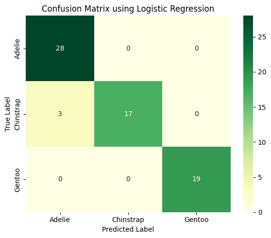
# compute and plot decision boundaries
plot_decision_boundaries(lr_model)

3.4 Tuning hyperparameters
# C=1.0
4. Naive Bayes
4.1 What is Naive Bayes
Naive Bayes algorithm is a simple yet powerful probabilistic classifier based on Bayes’ Theorem.
It assumes that all features are and equally important – a condition that often does not hold in practice, which can introduce some bias.
However, this independence assumption greatly simplifies computations by allowing conditional probabilities to be expressed as product of individual feature probabilities.
Given an input instance, algorithm calculates posterior probability for each class and assigns instance to class with highest probability.
Logistic Regression and Naive Bayes are both popular algorithms for classification tasks, but they differ significantly in their approach, assumptions, and underlying mechanics.
Below is an example comparing Logistic Regression and Naive Bayes decision boundaries on a synthetic dataset with two features.
Logistic Regression learns a linear decision boundary directly, whereas Naive Bayes models feature distributions for each class under independence assumption.
display(Image("../images/classification/naive-bayes-example.png", width=1024))

Figure: Logistic Regression vs. Naive Bayes model.
4.2 Training a Naive Bayes model
To apply Naive Bayes, we use GaussianNB from sklearn.naive_bayes, which assumes that features follow a Gaussian (normal) distribution – making it suitable for continuous numerical data such as bill length and body mass.
Because Naive Bayes relies on probabilities, feature scaling is not required; however, handling missing values and encoding categorical variables numerically remains necessary.
While Naive Bayes may not always match performance of more complex models like Random Forests, it offers fast training, low memory requirements, and reliable performance for simpler classification tasks.
from sklearn.naive_bayes import GaussianNB
# initialize and train Gaussian Naive Bayes classifier
gauss_nb_model = GaussianNB()
gauss_nb_model.fit(X_train_scaled, y_train.values.ravel())
GaussianNB()In a Jupyter environment, please rerun this cell to show the HTML representation or trust the notebook.
On GitHub, the HTML representation is unable to render, please try loading this page with nbviewer.org.
Parameters
| priors | None | |
| var_smoothing | 1e-09 |
4.3 Evaluating model’s performance
gauss_nb_y_pred = gauss_nb_model.predict(X_test_scaled)
gauss_nb_score = accuracy_score(y_test, gauss_nb_y_pred)
print("Accuracy for Gaussian Naive Bayes:", gauss_nb_score)
print("\nClassification Report:\n", classification_report(y_test, gauss_nb_y_pred))
Accuracy for Gaussian Naive Bayes: 0.9253731343283582
Classification Report:
precision recall f1-score support
0 0.87 0.96 0.92 28
1 0.94 0.80 0.86 20
2 1.00 1.00 1.00 19
accuracy 0.93 67
macro avg 0.94 0.92 0.93 67
weighted avg 0.93 0.93 0.92 67
# compute and plot AUC-ROC plots
plot_AUC_ROC(gauss_nb_model)
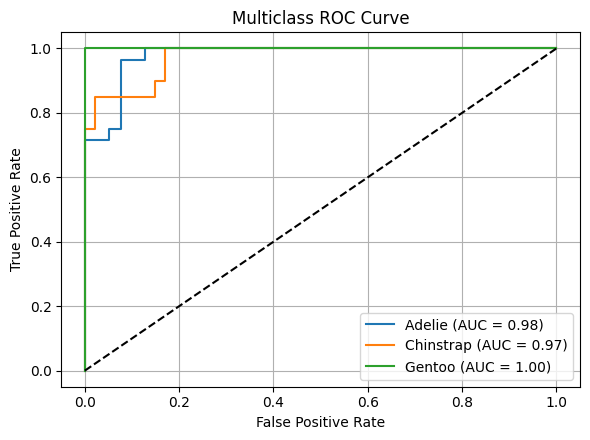
# compute and plot confusion matrix
gauss_nb_cm = confusion_matrix(y_test, gauss_nb_y_pred)
plot_confusion_matrix(gauss_nb_cm, "Confusion Matrix using Naive Bayes algorithm")

# compute and plot decision boundaries
plot_decision_boundaries(gauss_nb_model)
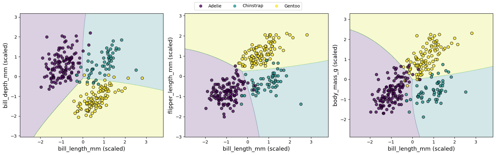
4.4 Logistic Regression vs Naive Bayes
Naive Bayes performs poorly on Penguins dataset, a key reason is that Naive Bayes’ assumptions are strongly violated by penguins data.
Strong feature correlation among physical measurements for penguins.
Larger penguins tend to have longer flippers AND higher body mass.
Bill length and bill depth are correlated due to morphology.
Most implementations use Gaussian Naive Bayes, which assumes Gaussian type distribution.
But penguin features are not perfectly Gaussian, may have skewness or multi-modal distributions, have different variances across species.
Tree-based models and SVMs do not require distributional assumptions, so they perform better.
Logistic Regression vs Naive Bayes
Logistic Regression is a discriminative model that directly estimates probability of a data point belonging to a particular class by fitting a linear combination of features
in context of Penguins dataset, Logistic Regression uses features such as bill length and flipper length to compute a weighted sum, which is then transformed into probabilities for penguins species
model assumes a linear relationship between features and log-odds of classes and optimizes parameters using maximum likelihood estimation
this makes Logistic Regression sensitive to feature scaling and correlations
it is generally robust to noise and can tolerate moderately correlated features, but it may struggle with highly non-linear relationships unless additional feature engineering is applied
Naive Bayes, by contrast, is a generative model that applies Bayes’ theorem to estimate probability of a class given input features, assuming conditional independence between features
for Penguins dataset, it estimates likelihood of features (e.g., bill depth) for each species and combines these with prior probabilities to predict most likely species
“naive” independence assumption often does not hold in practice (e.g., bill length and depth may be correlated), but it simplifies computation and allows Naive Bayes to be highly efficient, especially for high-dimensional data
it is less sensitive to irrelevant features and does not require feature scaling
however, it can underperform when feature dependencies are strong or when data distribution deviates from model’s assumptions (e.g., Gaussian for continuous features in Gaussian Naive Bayes)
zero probabilities must be carefully handled, typically via smoothing techniques.
Naive Bayes excels in
Text classification (Spam detection, Document topic classification, Sentiment analysis (bag-of-words))
Because features are word counts → high-dimensional, features are mostly conditionally independent, and data is very sparse.
Extremely high-dimensional, low-sample problems (genomics (gene presence/absence), malware signature detection, sensor event detection)
Real-time or resource-constrained systems (Online filtering, Edge devices, Early-stage baselines)
When probabilities matter more than accuracy, and Naive Bayes gives well-calibrated probabilities in some domains (especially text).
5. Support Vector Machine (SVM)
5.1 Intro to SVM
Logistic/Softmax Regression usually produce linear decision boundaries to separate two (multiple) classes based on their features.
A notable character is that decision boundary typically lies in region where predicted probabilities of two classes are closest – essentially where model is most uncertain.
However, when there is a large gap between two well-separated classes – as can occur when distinguishing cats from dogs based on weight and size – Logistic Regression faces an inherent limitation: an infinite number of possible solutions.
Logistic Regression algorithm has no built-in mechanism to select a single “optimal” boundary when multiple valid linear separators exist within wide margin between classes.
As a result, it may place decision boundary somewhere in gap, creating a broad, undefined region with little or no supporting data.
While this may not affect accuracy on clearly separated data, it can reduce model’s robustness when new or noisy data points appear near that boundary.
Below is an example of separating cats from dogs based on ear length and weight.
In addition to linear decision boundary produced by Logistic Regression classifier, we can identify three other linear boundaries that also achieve good separation between two classes.
A question then arises: which boundary is truly better, and how can we evaluate their performance on unseen data?
display(Image("../images/classification/svm-example-large-gap.png", width=1240))

To better handle such situation, we can turn to Support Vector Machine (SVM) algorithm.
Unlike Logistic/Softmax Regression, SVM focuses on maximizing margin – distance between decision boundary and closest data points from each class, known as support vectors (as illustrated in figure below).
When a gap exists between two classes, SVM takes advantage of this space by positioning boundary near center of gap while maintaining maximum margin.
This results in a more stable and robust classifier, especially when the classes are well-separated.
Unlike Logistic Regression, which considers all data points to estimate probabilities, SVM relies primarily on most critical examples – those closest to decision boundary – making it less sensitive to outliers and more precise in defining class separations.
display(Image("../images/classification/svm-example-with-max-margin-separation.png", width=1240))
{kind=link}
Figure: SVM classification boundary for distinguishing cats and dogs based on ear length and weight. Solid black line represents maximum margin hyperplane (decision boundary), while dashed green lines indicate positive and negative hyperplanes that define margin. Black circles highlight support vectors – critical data points that determine width of margin.
5.2 Training a SVM model
To apply SVM, we use SVC (Support Vector Classification) from sklearn.svm.
By default, it uses
rbf(Radial Basis Function) kernel, which assumes a nonlinear relationship between features.This kernel enables model to learn complex decision boundaries by implicitly mapping input features into a higher-dimensional space.
You can also experiment with other kernels, such as
linear,poly, orsigmoid, to explore different types of decision boundaries.
from sklearn.svm import SVC
svc_model = SVC(kernel='rbf', C=10.0, gamma='scale', probability=True, random_state=123)
svc_model.fit(X_train_scaled, y_train.values.ravel())
SVC(C=10.0, probability=True, random_state=123)In a Jupyter environment, please rerun this cell to show the HTML representation or trust the notebook.
On GitHub, the HTML representation is unable to render, please try loading this page with nbviewer.org.
Parameters
| C | 10.0 | |
| kernel | 'rbf' | |
| degree | 3 | |
| gamma | 'scale' | |
| coef0 | 0.0 | |
| shrinking | True | |
| probability | True | |
| tol | 0.001 | |
| cache_size | 200 | |
| class_weight | None | |
| verbose | False | |
| max_iter | -1 | |
| decision_function_shape | 'ovr' | |
| break_ties | False | |
| random_state | 123 |
5.3 Evaluating model’s performance
svc_y_pred = svc_model.predict(X_test_scaled)
svc_score = accuracy_score(y_test, svc_y_pred)
print("Accuracy for Support Vector Machine:", svc_score)
print("\nClassification Report:\n", classification_report(y_test, svc_y_pred))
Accuracy for Support Vector Machine: 0.9850746268656716
Classification Report:
precision recall f1-score support
0 0.97 1.00 0.98 28
1 1.00 0.95 0.97 20
2 1.00 1.00 1.00 19
accuracy 0.99 67
macro avg 0.99 0.98 0.99 67
weighted avg 0.99 0.99 0.99 67
# compute and plot AUC-ROC plots
plot_AUC_ROC(svc_model)
# compute and plot confusion matrix
svc_cm = confusion_matrix(y_test, svc_y_pred)
plot_confusion_matrix(svc_cm, "Confusion Matrix using Support Vector Machine")
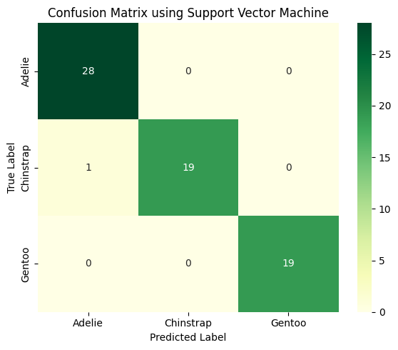
# compute and plot decision boundaries
plot_decision_boundaries(svc_model)

Callout
For rbf, by adjusting hyperparameters such as C (regularization strength) and gamma (kernel coefficient), we can control trade-off between margin width and classification accuracy.
Take time to tune hyperparameter
gammain SVM to observe how it affects shape of decision boundarySmall gamma values (e.g., 0.01) make each point’s influence spread out over a large area, resulting in a smoother, simpler decision boundary that may appear almost linear.
Large gamma values (e.g., 1.00) make each point’s influence very localized, allowing decision boundary to bend sharply around points and capture more complex patterns in data, but potentially leading to overfitting.
svc_model = SVC(kernel='rbf', C=10.0, gamma=0.01, random_state=123)
plot_decision_boundaries(svc_model)

svc_model = SVC(kernel='rbf', C=10.0, gamma=10.0, random_state=123)
plot_decision_boundaries(svc_model)
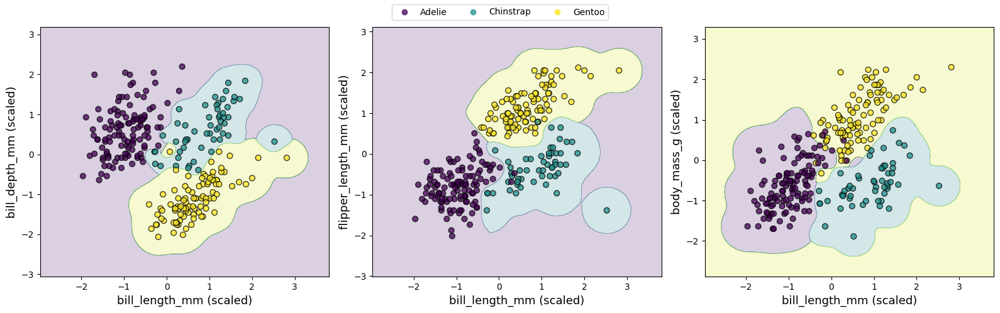
svc_model = SVC(kernel='rbf', C=0.1, gamma=0.01, random_state=123)
plot_decision_boundaries(svc_model)

svc_model = SVC(kernel='rbf', C=0.1, gamma=10.0, random_state=123)
plot_decision_boundaries(svc_model)

6. Tree-Based Models
6.1 Decision Tree
Decision Tree algorithm is a versatile and highly interpretable method for classification tasks.
Its core idea is to recursively split dataset into smaller subsets based on feature thresholds, creating a tree-like structure of decisions that maximizes separation of target classes.
i.e., a decision tree can be used to classify cats and dogs based on two or three features, illustrating how algorithm partitions feature space to distinguish between classes.
display(Image("../images/classification/decision-tree-example.png", width=1240))

Figure: (Upper): Decision boundary separating cats and dogs based on two features (ear length and weight), along with corresponding decision tree structure. (lower): Decision boundaries separating cats and dogs based on three features (ear length, weight, and tail length), and corresponding decision tree structure.
6.2 Train a Decision Tree model
from sklearn.tree import DecisionTreeClassifier
dt_model = DecisionTreeClassifier(max_depth=3, random_state = 123)
dt_model.fit(X_train_scaled, y_train.values.ravel())
DecisionTreeClassifier(max_depth=3, random_state=123)In a Jupyter environment, please rerun this cell to show the HTML representation or trust the notebook.
On GitHub, the HTML representation is unable to render, please try loading this page with nbviewer.org.
Parameters
| criterion | 'gini' | |
| splitter | 'best' | |
| max_depth | 3 | |
| min_samples_split | 2 | |
| min_samples_leaf | 1 | |
| min_weight_fraction_leaf | 0.0 | |
| max_features | None | |
| random_state | 123 | |
| max_leaf_nodes | None | |
| min_impurity_decrease | 0.0 | |
| class_weight | None | |
| ccp_alpha | 0.0 | |
| monotonic_cst | None |
6.3 Evaluating model’s performance
dt_y_pred = dt_model.predict(X_test_scaled)
dt_score = accuracy_score(y_test, dt_y_pred)
print("Accuracy for Decision Tree:", dt_score)
print("\nClassification Report:\n", classification_report(y_test, dt_y_pred))
Accuracy for Decision Tree: 0.9402985074626866
Classification Report:
precision recall f1-score support
0 0.90 0.96 0.93 28
1 0.94 0.85 0.89 20
2 1.00 1.00 1.00 19
accuracy 0.94 67
macro avg 0.95 0.94 0.94 67
weighted avg 0.94 0.94 0.94 67
# compute and plot AUC-ROC plots
plot_AUC_ROC(dt_model)
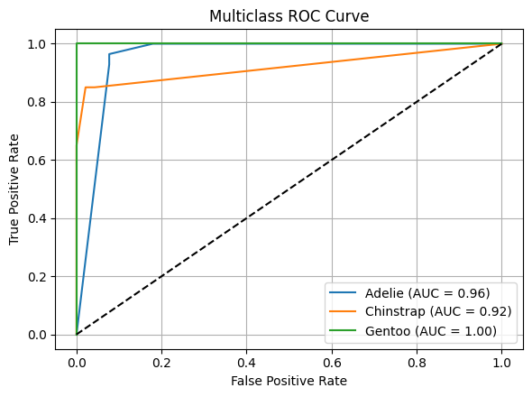
# compute and plot confusion matrix
dt_cm = confusion_matrix(y_test, dt_y_pred)
plot_confusion_matrix(dt_cm, "Confusion Matrix using Decision Tree algorithm")

# compute and plot decision boundaries
plot_decision_boundaries(dt_model)

6.4 Visualization
6.4.1 Tree structures
In Decision Tree algorithm, a tree structure is a hierarchical model that represents a sequence of decisions used to make predictions.
It resembles an upside-down tree, where data flow from a root node, through internal decision nodes, to leaf nodes that produce final outputs.
Core components of a decision tree
Root node
top node of tree
represents entire dataset
splits data based on most informative feature
Internal (decision) nodes
nodes where a decision is made
each node applies a test on a feature
e.g., bill_length_mm ≤ 45.2
each test divides data into branches
Branches (edges)
outcomes of a decision rule
represent possible values or ranges of a feature
Leaf (terminal) nodes
final nodes with no further splits
output prediction
class label (classification)
numeric value (regression)
# visualize Tree structure
from sklearn.tree import plot_tree
plt.figure(figsize=(16, 6))
plot_tree(dt_model, feature_names=X.columns, filled=True, rounded=True, fontsize=10)
plt.tight_layout()
plt.show()
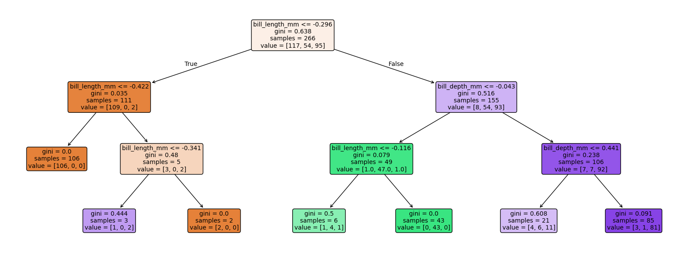
How to choose features for each split?
Callout
In decision trees, feature chosen at each node is one that produces best split of data according to a splitting criterion.
Goal is to select feature (and split point) that makes resulting child nodes as pure and informative as possible.
At each node, decision tree algorithm:
Considers all candidate features (or a random subset, depending on algorithm)
Evaluates possible split points for each feature
Selects feature and threshold that maximize improvement in a chosen criterion
Entropy/Information gain (classification)
Entropy = $-\sum_k p_k log_x p_k$, $x$ can be 2, e, and 10.
Information gain = reduction in entropy after a split
Used in Iterative Dichotomiser 3 algorithm (ID3)/ C4.5
Case I: a single toss of a fair coin has only two outcomes: heads and tails.
Probability that coin will land on heads is 0.5, and probability that it will land on tails is 0.5.
Entropy of coin toss is $-(0.5log_2 0.5 + 0.5log_2 0.5) = 1$
That is, only 1 bit is required to represent two equally probable outcomes, heads and tails.
Case II: two tosses of a fair coin can result in four possible outcomes: heads and heads, heads and tails, tails and heads, and tails and tails.
Probability of each outcome is 0.25.
Entropy of two tosses is equal to $-(0.25log_2 0.25 + 0.25log_2 0.25 + 0.25log_2 0.25 + 0.25log_2 0.25) = 2$
If coin has same face on both sides, variable representing its outcome has zero bits of entropy; that is, we are always certain of outcome and variable will never represent new information.
Case III: Entropy can also be represented as a fraction of a bit. i.e., an unfair coin has two different faces but is weighted such that faces are not equally likely to land in a toss.
Assume that probability that an unfair coin will land on heads is 0.8, and probability that it will land on tails is 0.2.
Entropy of a single toss of this coin is $-(0.8log_2 0.8 + 0.2log_2 0.2) = 0.72$
Outcome of a single toss of an unfair coin can have a fraction of 1 bit of entropy
There are two possible outcomes of toss, but we are not totally uncertain since one outcome is more frequent.
Gini impurity (classification)
Measures how mixed classes are in a node.
Gini = $1.0 -\sum_k p_k^2$
Lower Gini → purer node
Used by default in CART in scikit-learn
6.4.2 Feature importance
Feature importance refers to a measure of how much each input feature contributes to a model’s predictions.
It helps answer question: which features matter most for model’s decision-making process?
Feature importance is widely used to interpret models, understand data relationships, and guide feature selection.
In tree-based models such as decision trees, as well as random forests and gradient boosting that will be discussed in follow sections, feature importance is typically computed based on how much a feature reduces impurity (e.g., Gini impurity or entropy) or improves prediction accuracy across splits in tree.
Features that are frequently used for splitting and lead to large impurity reductions are considered more important.
These importance scores are often normalized so they sum to one, and provide a relative ranking, helping to identify which features most strongly influence model’s predictions.
In Decision Tree and Random Forest, impurity measures how “mixed” classes are in a given node.
A pure node contains only instances of a single class, while an impure node contains a mixture of classes.
Impurity metrics help tree decide which feature and threshold to use when splitting data to create nodes that are as pure as possible.
Gini impurity and entropy are metrics used to measure impurity of a dataset or a node.
During training, algorithm evaluates all possible splits for a feature.
It chooses split that maximizes purity, i.e., minimizes Gini impurity or maximizes information gain (reduction in entropy).
Beyond tree-based methods, feature importance can be defined in different ways depending on model and technique.
Permutation importance, i.e., measures how much model performance degrades when a feature’s values are randomly shuffled, making it model-agnostic.
In more complex models such as NNs, feature importance is often estimated using techniques like gradient-based methods, SHAP values, or attention mechanisms to quantify each feature’s influence on predictions.
Overall, feature importance improves model interpretability, helps detect irrelevant or redundant features, and supports better decision-making in ML workflows. However, importance scores should be interpreted carefully, as they can be affected by feature correlations, data distribution, and specific method used to compute them.
dt_model = DecisionTreeClassifier(max_depth=3, random_state = 123)
dt_model.fit(X_train_scaled, y_train.values.ravel())
importances = dt_model.feature_importances_
features = X.columns
plt.figure(figsize=(7, 4.5))
plt.barh(features, importances, color="tab:orange", alpha=0.75)
plt.xlabel("Feature Importance")
plt.ylabel("Features")
plt.title("Decision Tree Feature Importance")
plt.tight_layout()
plt.show()
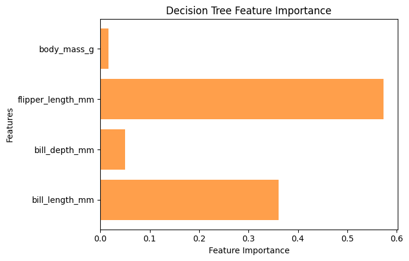
Advantages and disadvantages of Decision Tree
Callout
Compromises associated with using decision trees are different from those of other models we have discussed.
Decision trees are easy to use, unlike many learning algorithms, decision trees do not require data to be standardized.
Decision trees can learn to ignore features that are not relevant to task, and can be used to determine which features are most useful.
Decision trees support multi-output tasks, and a single decision tree can be used for multi-class classification without employing a strategy like one versus all.
Small decision trees can be easy to interpret and visualize with scikit-learn’s
treemodule.
Like most of other models, decision trees are eager learners.
Eager learners must build an input-independent model from training data before they can be used to estimate values of test instances, but can predict relatively quickly once model has been built.
In contrast, lazy learners such as KNN algorithm defer all generalization until they must make a prediction.
Lazy learners do not spend time training, but often predict slowly compared to eager learners.
Decision trees are more prone to overfitting than many other models, as their learning algorithms can produce large, complicated decision trees that perfectly model every training instance but fail to generalize real relationship.
Several techniques can mitigate overfitting in decision trees.
Pruning is a common strategy that removes some of tallest nodes and leaves of a decision tree, but it is not currently implemented in scikit-learn.
However, similar effects can be achieved through pre-pruning by setting a maximum depth for tree, or by creating child nodes only when number of training instances they will contain exceeds a threshold.
DecisionTreeClassifierandDecisionTreeRegressorclasses provide keyword arguments for setting these constraints.Another technique for reducing overfitting is creating multiple decision trees from subsets of training data and features.
This collection of models is called an ensemble.
Efficient decision tree learning algorithms like ID3 are greedy.
They learn efficiently by making locally optimal decisions, but are not guaranteed to produce globally optimal tree.
ID3 constructs a tree by selecting a sequence of features to test.
Each feature is selected because it reduces uncertainty in node more than other variables.
It is possible, however, that locally sub-optimal tests are required in order to find globally optimal tree.
In a real application, however, tree’s growth could be limited by pruning or similar mechanisms.
Pruning trees with different shapes can produce trees with different performances.
In practice, locally optimal decisions that are guided by information gain or Gini impurity heuristics often result in acceptable decision trees.
6.5 Ensemble learning
While Decision Trees are easy to interpret and visualize, they have some notable drawbacks.
One primary issue is their tendency to overfit training data, particularly when tree is allowed to grow deep without constraints such as maximum depth or minimum samples per split.
Overfitting causes model to capture noise in training data, which can lead to poor generalization on unseen data – i.e., misclassifying a Gentoo as a Chinstrap due to overly specific splits.
Additionally, decision trees are sensitive to small variations in data.
Even slight changes, such as a few noisy measurements, can result in a significantly different tree structure, reducing model’s stability and reliability.
To address these limitations, we can use an ensemble learning, an approach that combines multiple individual models (often referred to as base/weak learners) to build a stronger, more accurate, and more robust overall model.
Idea is that by aggregating predictions of several models, ensemble can reduce errors, improve generalization, and mitigate weaknesses of individual models.
There are three main types of ensemble learning techniques:
Bagging (Bootstrap Aggregating): Multiple models are trained independently on random subsets of data, and their predictions are averaged (for regression) or voted on (for classification).
Bagging independently fits multiple models on variants of training data, which are created using a procedure called bootstrap resampling. Bootstrap resampling is a method of estimating uncertainty in a statistic.
Random Forest is a classic example of bagging applied to decision trees.
Boosting: Models are trained sequentially, with each new model focusing on errors made by previous models.
Examples include AdaBoost, Gradient Boosting, XGBoost, and LightGBM.
Stacking is an ensemble strategy that combines multiple models and uses a meta-model to learn how to best combine their predictions.
First use Random Forest, XGBoost, and SVM are the base models, and then use Logistic Regression as the meta-model to learn how to combine their predictions.
display(Image("../images/classification/ensemble-learning-randomForest-gradientBoosting.png", width=1240))

Figure: (Upper): Iillustration of Random Forest and Gradient Boosting algorithms.
display(Image("../images/classification/evolution-tree-algorithms.png", width=1240))

6.5.1 Random Forest
A Random Forest builds on concept of decision trees by creating a large collection of them, each trained on a randomly selected subset of data and features.
By aggregating predictions of multiple trees, typically through majority voting for classification, Random Forest reduces overfitting, improves generalization, and mitigates the inherent instability in individual decision trees.
Figure below illustrates how a Random Forest improves upon a single Decision Tree when classifying cats and dogs based on synthetic measurements of ear length and weight.
Top row shows classification boundaries for both models.
Left: a single Decision Tree creates rigid, rectangular decision regions that precisely follow axis-aligned splits in training data.
While this achieves a good separation of training samples, jagged boundaries suggest potential overfitting to noise.
Right: Random Forest produces smoother, more nuanced decision boundaries through majority voting across 100 trees
Blended purple transition zones represent areas where individual trees disagree, demonstrating how ensemble averages out erratic predictions from any single tree.
Bottom row reveals why Random Forests are more robust by examining three constituent trees:
tree #1 prioritizes ear length for its initial split,
tree #2 begins with weight,
tree #3 uses a completely different weight threshold.
display(Image("../images/classification/random-forest-example.png", width=1240))

from sklearn.ensemble import RandomForestClassifier
rf_model = RandomForestClassifier(n_estimators=100, random_state=123)
rf_model.fit(X_train_scaled, y_train.values.ravel())
rf_y_pred = rf_model.predict(X_test_scaled)
rf_score = accuracy_score(y_test, rf_y_pred)
print("Accuracy for Random Forest:", rf_score)
print("\nClassification Report:\n", classification_report(y_test, rf_y_pred))
Accuracy for Random Forest: 0.9552238805970149
Classification Report:
precision recall f1-score support
0 0.90 1.00 0.95 28
1 1.00 0.85 0.92 20
2 1.00 1.00 1.00 19
accuracy 0.96 67
macro avg 0.97 0.95 0.96 67
weighted avg 0.96 0.96 0.95 67
# compute and plot AUC-ROC plots
plot_AUC_ROC(rf_model)
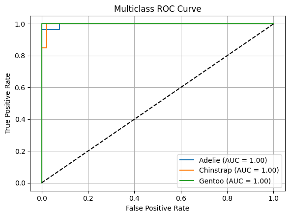
# compute and plot confusion matrix
rf_cm = confusion_matrix(y_test, rf_y_pred)
plot_confusion_matrix(rf_cm, "Confusion Matrix using Random Forest algorithm")
# compute and plot decision boundaries
plot_decision_boundaries(rf_model)
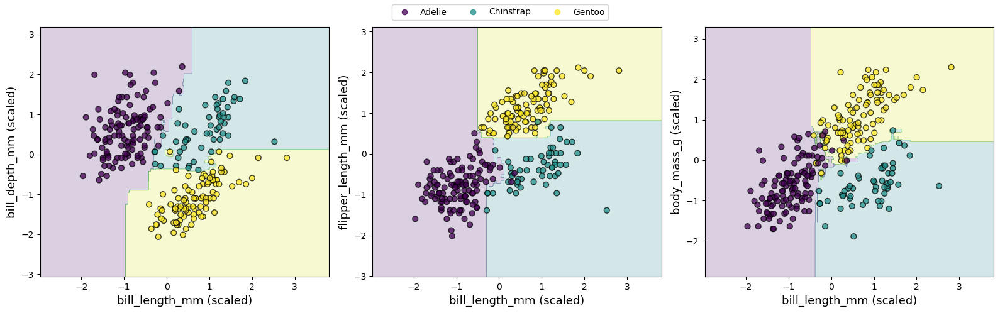
# visualize tree structure
# Random forest stores its trees in `estimators_` attribute, here we access an individual tree
tree = rf_model.estimators_[0]
plt.figure(figsize=(22, 12))
plot_tree(tree, feature_names=X_train.columns,
class_names=encoder.classes_, filled=True, rounded=True, fontsize=10
)
plt.tight_layout()
plt.show()
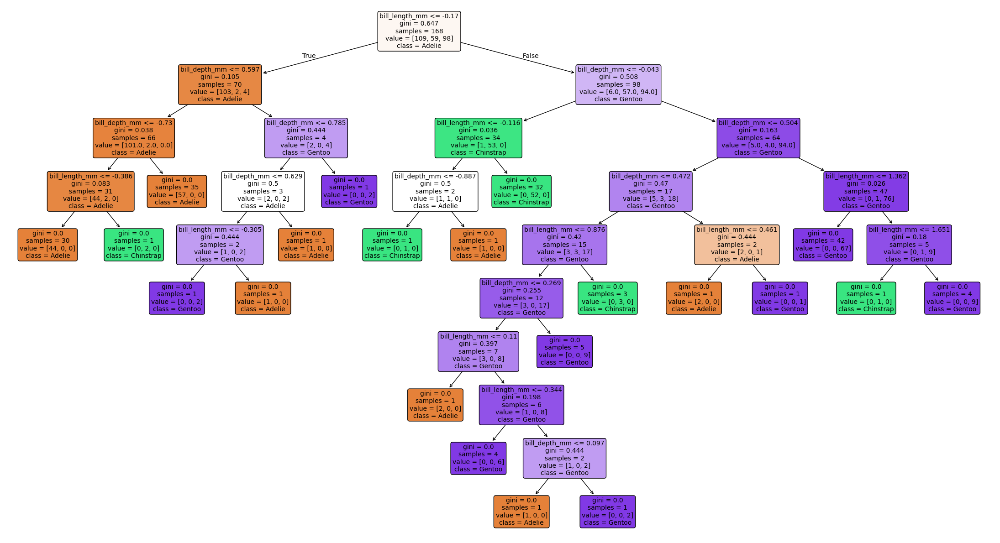
# feature importance
rf_model = RandomForestClassifier(n_estimators=100, random_state=123)
rf_model.fit(X_train_scaled, y_train.values.ravel())
importances = rf_model.feature_importances_
features = X.columns
plt.figure(figsize=(7, 4.5))
plt.barh(features, importances, color="tab:orange", alpha=0.75)
plt.xlabel("Feature Importance")
plt.ylabel("Features")
plt.title("Random Forest Feature Importance")
plt.tight_layout()
plt.show()

6.5.2 Gradient Boosting
Why not AdaBoosting but Gradient Boosting?
Below are structured comparison between AdaBoost and Gradient Boosting.
timeline
AdaBoost was proposed in 1996 by Yoav Freund and Robert Schapire. It was one of first practical boosting algorithms and played a major role in establishing ensemble learning as a core technique in ML.
Gradient Boosting was introduced in 2001 by Jerome H. Friedman. It generalized boosting by framing it as a gradient descent optimization problem in function space, allowing use of arbitrary differentiable loss functions and making method more flexible.
This historical progression also explains why AdaBoost is often seen as a more specialized method, while Gradient Boosting serves as foundation for modern variants such as XGBoost, LightGBM, and CatBoost.
core idea
AdaBoost: Sequential weighted voting: builds trees sequentially, each tree focuses more on misclassified samples from the previous trees; Adjusts sample weights to reduce errors; emphasizes harder-to-classify instances.
Gradient Boosting: Stage-wise additive model: builds trees sequentially, each tree tries to predict the residuals (errors) of previous trees; Minimizes a differentiable loss function (e.g., MSE, log-loss) using gradient descent.
Weak learners
AdaBoost: Typically stumps (1-level trees); Each tree predicts class; final prediction = weighted vote based on accuracy.
Gradient Boosting: Usually shallow trees (e.g., max depth 3–5); Each tree predicts residuals; final prediction = sum of weighted trees.
How they handle errors
AdaBoost: Increases weights of misclassified samples, so next tree pays more attention to them; Uses exponential loss implicitly via sample weighting.
Gradient Boosting: Fits residuals (difference between prediction and true target); Uses gradient descent on chosen loss function.
Performance & Use Cases
AdaBoost: Simple and effective for small to medium datasets; Sensitive to noisy data and outliers; Historically one of the first boosting algorithms.
Gradient Boosting: Handles complex relationships and nonlinearities well; Often more accurate than AdaBoost on large datasets; More flexible (can optimize different loss functions).
Intuition
AdaBoost: Each new tree focuses more on hard-to-classify samples and votes with a weight proportional to its accuracy.
Gradient Boosting: Each new tree tries to fix the mistakes of the ensemble by modeling the residuals.
While Random Forest provides robustness and improved accuracy over individual trees, we can further enhance performance using Gradient Boosting.
Like Random Forest, Gradient Boosting is an ensemble learning technique, but it builds a strong classifier by combining many weak learners (typically shallow decision trees) in a sequential manner.
Unlike Random Forest, which grows multiple trees independently and in parallel using random subsets of training data, Gradient Boosting constructs trees one at a time, with each new tree trained to correct errors of its predecessors.
Below apply Gradient Boosting algorithm to classify penguin species using
GradientBoostingClassifierfrom scikit-learn.
from sklearn.ensemble import GradientBoostingClassifier
gb_model = GradientBoostingClassifier(n_estimators=100, learning_rate=0.1, max_depth=3, random_state=123)
gb_model.fit(X_train_scaled, y_train.values.ravel())
gb_y_pred = gb_model.predict(X_test_scaled)
gb_score = accuracy_score(y_test, gb_y_pred)
print("Accuracy for Gradient Boosting:", gb_score)
print("\nClassification Report:\n", classification_report(y_test, gb_y_pred))
Accuracy for Gradient Boosting: 0.9552238805970149
Classification Report:
precision recall f1-score support
0 0.90 1.00 0.95 28
1 1.00 0.85 0.92 20
2 1.00 1.00 1.00 19
accuracy 0.96 67
macro avg 0.97 0.95 0.96 67
weighted avg 0.96 0.96 0.95 67
# compute and plot AUC-ROC plots
plot_AUC_ROC(gb_model)
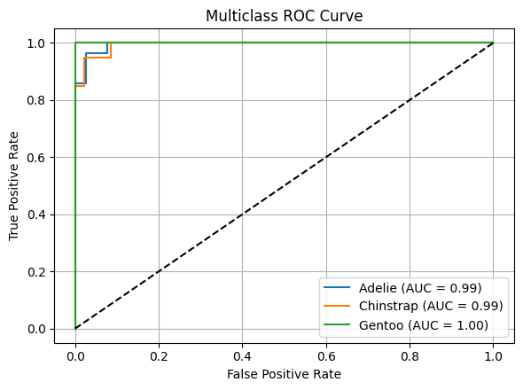
# compute and plot confusion matrix
gb_cm = confusion_matrix(y_test, gb_y_pred)
plot_confusion_matrix(gb_cm, "Confusion Matrix using Gradient Boosting algorithm")
# compute and plot decision boundaries
plot_decision_boundaries(gb_model)
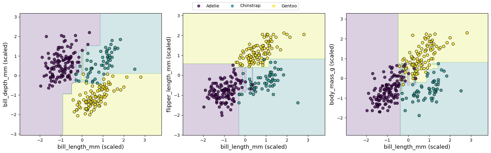
# visualize Tree structure
# Gradient Boosting algorithm stores its trees in `estimators_` attribute, here we access an individual tree
tree = gb_model.estimators_[0, 0]
plt.figure(figsize=(16, 6))
plot_tree(tree, feature_names=X_train.columns,
class_names=encoder.classes_, filled=True, rounded=True, fontsize=10
)
plt.tight_layout()
plt.show()
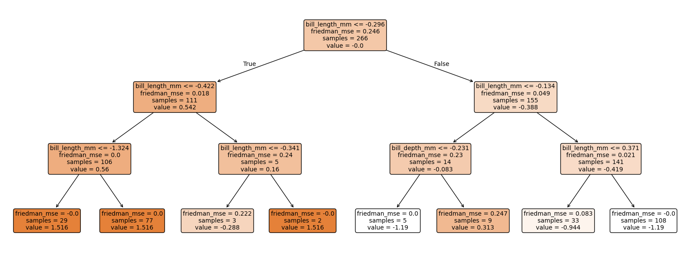
# feature importance
gb_model = GradientBoostingClassifier(n_estimators=100, learning_rate=0.1, max_depth=3, random_state=123)
gb_model.fit(X_train_scaled, y_train.values.ravel())
importances = gb_model.feature_importances_
features = X.columns
plt.figure(figsize=(7, 4.5))
plt.barh(features, importances, color="tab:orange", alpha=0.75)
plt.xlabel("Feature Importance")
plt.ylabel("Features")
plt.title("Gradient Boosting Feature Importance")
plt.tight_layout()
plt.show()
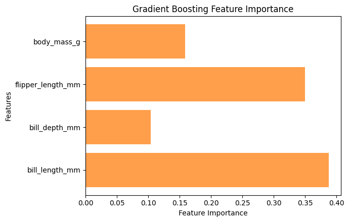
6.5.3 Number of base estimators in ensemble
n_estimators_range = np.arange(1, 51, 3)
rf_accuracies = []
gb_accuracies = []
for n in n_estimators_range:
rf_model = RandomForestClassifier(n_estimators=n, random_state=123)
rf_model.fit(X_train_scaled, y_train.values.ravel())
rf_accuracies.append(rf_model.score(X_test_scaled, y_test))
gb_model = GradientBoostingClassifier(n_estimators=n, learning_rate=0.1, max_depth=3, random_state=123)
gb_model.fit(X_train_scaled, y_train.values.ravel())
gb_accuracies.append(gb_model.score(X_test_scaled, y_test))
plt.figure(figsize=(6, 4.5))
plt.plot(n_estimators_range, rf_accuracies, color='tab:orange', marker='o', label='Random Forest')
plt.plot(n_estimators_range, gb_accuracies, color='tab:green', marker='s', label='Gradient Boosting')
plt.xlabel('Number of base estimators in ensemble')
plt.ylabel('Ensemble accuracy')
plt.legend()
plt.grid(True)
plt.show()
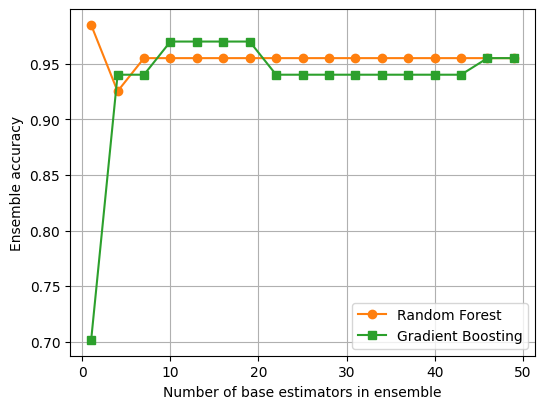
Short summary about Tree-based methods
This progression – from simplicity and interpretability of a single decision tree, to robustness and variance reduction of random forests, and finally to high precision and flexibility of gradient boosting – reflects natural evolution of tree-based methods in modern ML.
Each step addresses key limitations of previous approach, moving from simple rule-based models toward more powerful ensemble techniques.
While random forests are widely used for establishing strong baseline performance due to their stability and minimal tuning requirements, gradient boosting often delivers superior predictive accuracy on structured and tabular data.
This is particularly true in domains such as ecological and environmental measurements, where complex nonlinear relationships and feature interactions are common.
When hyperparameters such as learning rate, tree depth, and number of estimators are carefully tuned, gradient boosting models frequently achieve state-of-the-art results.
6.5.4 Stacking method
Stacking (stacked generalization) is an approach to creating ensembles; it uses a meta-estimator to combine predictions of base estimators (can be different types of base estimators).
It combines multiple different models by training a meta-model to learn how to best merge their predictions.
Instead of simply averaging or voting, stacking learns how much to trust each base model based on data.
To train a stacked ensemble, first use training set to train base estimators.
Base estimators’ predictions and ground truth are then used as training set for meta-estimator.
Meta-estimator can learn to combine base estimators’ predictions in more complex ways than voting or averaging.
Scikit-learn does not implement a stacking meta-estimator, but we can extend
BaseEstimatorclass to create our own.We use a single decision tree as meta-estimator; base estimators are a logistic regression classifier and a KNN classifier.
Meta decision tree does not see raw features. Instead, it learns decision rules based on how confident each base model is for each class.
from sklearn.ensemble import StackingClassifier
# define base estimators
base_estimators = [
('lr', LogisticRegression(max_iter=1000)),
('knn', KNeighborsClassifier(n_neighbors=5))
]
# define meta-estimator
meta_estimator = DecisionTreeClassifier(
max_depth=3,
random_state=123
)
# build stacking model
stacking_model = StackingClassifier(
estimators=base_estimators,
final_estimator=meta_estimator,
cv=5, # cross-validation to avoid data leakage
stack_method='predict_proba'
)
# train stacking ensemble
stacking_model.fit(X_train_scaled, y_train.values.ravel())
# evaluate model
#stacking_accuracy = stacking_model.score(X_test_scaled, y_test)
#print(f"Stacking model accuracy: {stacking_accuracy:.3f}")
stacking_y_pred = stacking_model.predict(X_test_scaled)
stacking_score = accuracy_score(y_test, stacking_y_pred)
print("Accuracy for Stacking model:", stacking_score)
print("\nClassification Report:\n", classification_report(y_test, stacking_y_pred))
Accuracy for Stacking model: 0.9701492537313433
Classification Report:
precision recall f1-score support
0 0.93 1.00 0.97 28
1 1.00 0.90 0.95 20
2 1.00 1.00 1.00 19
accuracy 0.97 67
macro avg 0.98 0.97 0.97 67
weighted avg 0.97 0.97 0.97 67
# compute and plot AUC-ROC plots
plot_AUC_ROC(stacking_model)
# compute and plot confusion matrix
stacking_cm = confusion_matrix(y_test, stacking_y_pred)
plot_confusion_matrix(stacking_cm, "Confusion Matrix using Stacking method")

# compute and plot decision boundaries
plot_decision_boundaries(stacking_model)

# visualize tree structure
# stacking_model.final_estimator_
# extract meta decision tree
meta_tree = stacking_model.final_estimator_
# we use
# stack_method='predict_proba'
# each base model contributes one probability per class.
# define feature names for meta-model
# in stacking, meta-model’s inputs are base models’ outputs, not original features.
class_names = encoder.classes_
meta_feature_names = []
for model_name, _ in stacking_model.estimators:
for class_name in class_names:
meta_feature_names.append(f"{model_name}_prob_{class_name}")
plt.figure(figsize=(14, 5))
plot_tree(meta_tree, feature_names=meta_feature_names,
class_names=class_names,
filled=True, rounded=True, fontsize=10
)
plt.tight_layout()
plt.show()

# feature importance
# for 3 classes and 2 base models, we have 2×3=6 meta-features in total
meta_tree = stacking_model.final_estimator_
importances = meta_tree.feature_importances_
feature_names = meta_feature_names # from stacking
plt.figure(figsize=(7, 4.5))
plt.barh(feature_names, importances, color="tab:orange", alpha=0.75)
plt.xlabel("Feature Importance")
plt.title('Meta-Estimator Feature Importance')
plt.gca().invert_yaxis()
plt.tight_layout()
plt.show()

7. Neural Network Models
7.1 Multi-Layer Perceptron (simple neural networks)
A Multi-Layer Perceptron (MLP) is a type of artificial neural network (ANN) consisting of multiple layers of interconnected perceptrons (or neurons) designed to mimic certain aspects of human brain function.
Each neuron (illustrated in figure below) has following characteristics:
Input: one or more inputs (
x_1,x_2, …), e.g., features from input data expressed as floating-point numbers.Operations: Typically, each neuron conducts three main operations:
Compute weighted sum of inputs where (
w_1,w_2, …) are corresponding weights.Add a bias term to weighted sum.
Apply an activation function to result.
Output: Neuron produces a single output value.
A common equation for output of a neuron is
$Output = Activation(\sum_i (x_i * w_i) + bias)$.
display(Image("../images/classification/mlp-neuron.png", width=1240))

An activation function is a mathematical transformation that converts weighted sum of a neuron’s inputs into its output signal.
By introducing non-linearity into network, activation functions enable NNs to learn complex patterns and make sophisticated decisions based on weighted inputs.
Below are some commonly used activation functions in NNs and DL models. Each plays a crucial role in introducing non-linearities, allowing network to capture intricate patterns and relationships in data.
Sigmoid: With its characteristic S-shaped curve, sigmoid function maps inputs to a smooth 0-1 range, making it historically popular for binary classification tasks.
Hyperbolic tangent (tanh): Similar to sigmoid but ranging from -1 to 1, tanh often provides stronger gradients during training.
Rectified Linear Unit (ReLU): Outputs zero for negative inputs and identity for positive inputs. ReLU has become default choice for many NN architectures due to its computational efficiency and its ability to mitigate vanishing gradient problem.
Linear: This identity function serves as a reference, showing network behavior without any non-linear transformation.
display(Image("../images/classification/activation-function.png", width=1240))
{kind=link}
A single neuron (perceptron) can learn simple patterns but is limited in modeling complex relationships.
By combining multiple perceptrons (neurons) into layers and connecting them into a network, which is called Multi-Layer Perceptron (MLP), we create a powerful computational framework capable of approximating highly non-linear functions.
In a MLP, neurons are organized into an input layer, one or more hidden layers, and an output layer.
Image below illustrates a three-layer perceptron network with 3, 4, and 2 neurons in input, hidden, and output layers, respectively.
Input layer receives raw data, such as pixel values or measurements, and passes it to hidden layer.
Hidden layer contains multiple neurons that process information and progressively extract higher-level features. Each neuron in hidden layer is fully connected to neurons in adjacent layers, forming a dense network of weighted connections.
Output layer produces network’s predictions, whether it’s a classification, regression output, or some other tasks.
display(Image("../images/classification/mlp-network.png", width=1240))
{kind=link}
In penguin classification task, we build a three-layer perceptron network using scikit-learn’s MLPClassifier from sklearn.neural_network.
Model is configured with:
an input layer matching number of features (6 per penguin)
a hidden layer (e.g., 16 neurons) to capture non-linear relationships
an output layer with three nodes (one per penguin class), using
reluactivation for hidden layer.
Other hyperparameters may use to construct this MLP are listed below:
adam, optimization algorithm used to update weight parameters.alpha, L2 regularization term (penalty). Setting this to 0 disables regularization, meaning model won’t penalize large weights. This may cause overfitting if dataset is small or noisy.batch_size, number of samples per mini-batch during training. Smaller batches lead to more frequent updates (finer learning) but can increase noise and training time.learning_rate, specifies learning rate schedule.“constant” means that learning rate keeps fixed throughout training.
Other options like “invscaling” or “adaptive” would adjust learning rate during training.
learning_rate_init=0.001, initial learning rate (fixed here).A smaller value means slower learning, which may require more iterations but offers more stability.
max_iter, maximum number of training iterations (epochs).n_iter_no_change=10, if validation score does not improve for 10 consecutive iterations, training will stop early.This is a form of early stopping to prevent overfitting or unnecessary computation.
random_state=123, controls random number generation for weight initialization and data shuffling, ensuring reproducible results.
from sklearn.neural_network import MLPClassifier
# solver='adam', alpha=0, batch_size=8, learning_rate='constant', learning_rate_init=0.001, n_iter_no_change=10
mlp_model = MLPClassifier(hidden_layer_sizes=(16,), activation='relu', max_iter=1000, random_state=123)
mlp_model.fit(X_train_scaled, y_train.values.ravel())
MLPClassifier(hidden_layer_sizes=(16,), max_iter=1000, random_state=123)In a Jupyter environment, please rerun this cell to show the HTML representation or trust the notebook.
On GitHub, the HTML representation is unable to render, please try loading this page with nbviewer.org.
Parameters
| hidden_layer_sizes | (16,) | |
| activation | 'relu' | |
| solver | 'adam' | |
| alpha | 0.0001 | |
| batch_size | 'auto' | |
| learning_rate | 'constant' | |
| learning_rate_init | 0.001 | |
| power_t | 0.5 | |
| max_iter | 1000 | |
| shuffle | True | |
| random_state | 123 | |
| tol | 0.0001 | |
| verbose | False | |
| warm_start | False | |
| momentum | 0.9 | |
| nesterovs_momentum | True | |
| early_stopping | False | |
| validation_fraction | 0.1 | |
| beta_1 | 0.9 | |
| beta_2 | 0.999 | |
| epsilon | 1e-08 | |
| n_iter_no_change | 10 | |
| max_fun | 15000 |
# print MLP network information
print("Number of layers (including input and output):", mlp_model.n_layers_)
print("Input layer size:", mlp_model.coefs_[0].shape[0])
print("Output layer size:", mlp_model.coefs_[-1].shape[1])
print("Hidden layer sizes:", [coef.shape[1] for coef in mlp_model.coefs_[:-1]])
Number of layers (including input and output): 3
Input layer size: 4
Output layer size: 3
Hidden layer sizes: [16]
mlp_y_pred = mlp_model.predict(X_test_scaled)
mlp_score = accuracy_score(y_test, mlp_y_pred)
print("Accuracy for Multi-Layer Perceptron:", mlp_score)
print("\nClassification Report:\n", classification_report(y_test, mlp_y_pred))
Accuracy for Multi-Layer Perceptron: 0.9701492537313433
Classification Report:
precision recall f1-score support
0 0.93 1.00 0.97 28
1 1.00 0.90 0.95 20
2 1.00 1.00 1.00 19
accuracy 0.97 67
macro avg 0.98 0.97 0.97 67
weighted avg 0.97 0.97 0.97 67
# compute and plot AUC-ROC plots
plot_AUC_ROC(mlp_model)
# compute and plot confusion matrix
mlp_cm = confusion_matrix(y_test, mlp_y_pred)
plot_confusion_matrix(mlp_cm, "Confusion Matrix using Multi-Layer Perceptron algorithm")

# compute and plot decision boundaries
plot_decision_boundaries(mlp_model)
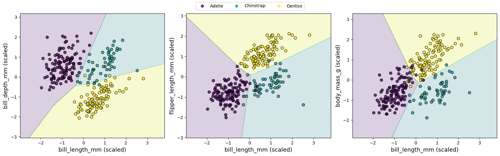
7.2 Neural Networks (Keras)
MLP is a foundational NN architecture, consisting of an input layer, one or more hidden layers, and an output layer.
While MLP excels at learning complex patterns from tabular data, its shallow depth (typically 1-2 hidden layers) limits its ability to handle very high-dimensional or abstract data such as raw images, audio, or text.
To overcome these limitations, deep NN extends MLP framework by adding multiple hidden layers.
These additional layers allow model to learn highly abstract features through deep hierarchical representations: early layers might capture basic features (like edges or shapes), while deeper layers recognize complex objects or semantic patterns.
This depth enables deep NN to outperform traditional MLP in complex tasks requiring high-level feature extraction, such as CV and NLP.
NN architectures
Callout
NNs have specialized architectures designed to handle different types of data (e.g., spatial, temporal, and sequential data) and tasks more effectively.
A standard feedforward neural network (FNN) consists of stacked fully connected layers.
Convolutional neural networks (CNNs) are particularly well-suited for image data.
They use convolutional layers to automatically extract local features like edges, textures, and shapes, significantly reducing number of parameters and improving generalization on visual tasks.
Recurrent neural network (RNN) is designed for sequential data such as time series, speech, or natural language.
RNNs include loops that allow information to persist across time steps, enabling model to learn dependencies over sequences.
More advanced versions, like Long Short-Term Memory (LSTM) networks and Gated Recurrent Units (GRUs), address limitations of basic RNNs by managing long-term dependencies more effectively.
In addition to CNNs and RNNs, Transformer architecture has emerged as state-of-the-art in many language and vision tasks.
Transformers rely entirely on attention mechanisms rather than recurrence or convolutions, enabling them to model global relationships in data more efficiently.
This flexibility has made them foundation of powerful models like BERT, and GPT.
These specialized DL architectures illustrate how tailoring network design to structure of the data can lead to significant performance gains and more efficient learning.
Here, we use Keras API to construct a small DNN and apply it to penguin classification task, demonstrating how even a compact architecture can effectively distinguish between penguin species (Adelie, Chinstrap, and Gentoo).
In this tutorial, we exclude categorical features
islandandsexfrom both training and testing datasets.Target label
speciesis then encoded usingpd.get_dummies()function in Pandas.Afterward, we split data into training and testing sets and standardize feature values to ensure consistent scaling during model training.
from tensorflow import keras
# load dataset
penguins = sns.load_dataset('penguins')
# remove missing values and outliers
penguins_classification = penguins.dropna()
X = penguins_classification[['bill_length_mm', 'bill_depth_mm', 'flipper_length_mm', 'body_mass_g']].copy()
#y = penguins_classification['species'].astype('int')
y = penguins_classification[['species']].copy()
# encoding categorical variables using `get_dummies`
y = pd.get_dummies(penguins_classification['species']).astype(np.int8)
y.columns = ['Adelie', 'Chinstrap', 'Gentoo']
X_train, X_test, y_train, y_test = train_test_split(X, y, test_size=0.2, random_state=123)
print(f"Number of examples for training is {len(X_train)} and test is {len(X_test)}")
# standardize features
scaler = StandardScaler()
X_train_scaled = scaler.fit_transform(X_train)
X_test_scaled = scaler.transform(X_test)
Number of examples for training is 266 and test is 67
When building a DNN with Keras, there are two common approaches: using Sequential() API step by step, or defining all layers at once within Sequential() constructor.
Here, we adopt first approach, whereas second approach is used in Jupyter notebook to construct same DNN.
We start by creating an empty model with
keras.Sequential(), which initializes a linear container for stacking sequential layers.Next, we define each layer separately using
Denseclass, specifying number of neurons and activation function for each layer.Finally, we add all layers using
keras.Model()to sequential container, resulting in a trainable model.from tensorflow.keras.layers import Dense, Dropout dnn_model = Sequential() input_layer = keras.Input(shape=(X_train_scaled.shape[1],)) # 4 input features hidden_layer1 = Dense(32, activation="relu")(input_layer) # hidden_layer1 = Dropout(0.2)(hidden_layer1) hidden_layer2 = Dense(16, activation="relu")(hidden_layer1) hidden_layer3 = Dense(8, activation="relu")(hidden_layer2) output_layer = Dense(3, activation="softmax")(hidden_layer3) # 3 classes dnn_model = keras.Model(inputs=input_layer, outputs=output_layer)
keras.layers.Dropout()is a regularization technique in Keras used to reduce overfitting by randomly setting a fraction of input units to zero during training.Dropout(0.2)means that 20% of outputs of a specific layer will be randomly set to zero in each training step.
## construct neuron network using `Sequential()` constructor
from tensorflow.keras.layers import Dense, Dropout
dnn_model = keras.Sequential([
keras.Input(shape=(X_train_scaled.shape[1],)), # input layer: 4 input features
Dense(16, activation="relu"), # three hidden layers
Dense(8, activation="relu"),
Dense(4, activation="relu"),
Dense(3, activation="softmax") # output layer: 3 classes
])
# print a concise summary of a NN’s architecture
dnn_model.summary()
Model: "sequential"
┏━━━━━━━━━━━━━━━━━━━━━━━━━━━━━━━━━┳━━━━━━━━━━━━━━━━━━━━━━━━┳━━━━━━━━━━━━━━━┓ ┃ Layer (type) ┃ Output Shape ┃ Param # ┃ ┡━━━━━━━━━━━━━━━━━━━━━━━━━━━━━━━━━╇━━━━━━━━━━━━━━━━━━━━━━━━╇━━━━━━━━━━━━━━━┩ │ dense (Dense) │ (None, 16) │ 80 │ ├─────────────────────────────────┼────────────────────────┼───────────────┤ │ dense_1 (Dense) │ (None, 8) │ 136 │ ├─────────────────────────────────┼────────────────────────┼───────────────┤ │ dense_2 (Dense) │ (None, 4) │ 36 │ ├─────────────────────────────────┼────────────────────────┼───────────────┤ │ dense_3 (Dense) │ (None, 3) │ 15 │ └─────────────────────────────────┴────────────────────────┴───────────────┘
Total params: 267 (1.04 KB)
Trainable params: 267 (1.04 KB)
Non-trainable params: 0 (0.00 B)
Now that we have designed a DNN that, in theory, should be capable of classifying penguins, we need to specify two critical components before training: (1) a loss function to quantify prediction errors, and (2) an optimizer to adjust the model’s weights during training.
Loss function: For multi-class classification, we select categorical cross-entropy, which penalizes incorrect probabilistic predictions.
In Keras, this is implemented via
keras.losses.CategoricalCrossentropyclass.This loss function works naturally with
softmaxactivation function we applied in output layer.
Optimizer determines how efficiently model converges during training.
Keras provides many options, each with its advantages, but here we use widely adopted
Adam(adaptive moment estimation) optimizer.Adam has several parameters, and default values generally perform well, so we will use it with its defaults.
We use
model.compile()to combine chosen loss function and optimier before starting training.One training epoch means that every sample in training data has been shown to NN once and used to update its parameters.
During training, we set
batch_size=16to balance memory efficiency with gradient stability, andverbose=1to display a progress bar showing loss and metrics for each epoch in real time..fit()method returns a history object, which contains a history attribute holding training loss and other metrics for each epoch.
# compile DNN model
from keras.optimizers import Adam
dnn_model.compile(optimizer='adam', loss=keras.losses.CategoricalCrossentropy())
# train DNN model
history = dnn_model.fit(X_train_scaled, y_train, batch_size=16, epochs=100, verbose=1)
Epoch 1/100
17/17 ━━━━━━━━━━━━━━━━━━━━ 1s 2ms/step - loss: 1.0613
Epoch 2/100
17/17 ━━━━━━━━━━━━━━━━━━━━ 0s 2ms/step - loss: 0.9475
Epoch 3/100
17/17 ━━━━━━━━━━━━━━━━━━━━ 0s 2ms/step - loss: 0.8400
Epoch 4/100
17/17 ━━━━━━━━━━━━━━━━━━━━ 0s 2ms/step - loss: 0.7255
Epoch 5/100
17/17 ━━━━━━━━━━━━━━━━━━━━ 0s 2ms/step - loss: 0.6120
Epoch 6/100
17/17 ━━━━━━━━━━━━━━━━━━━━ 0s 2ms/step - loss: 0.5206
Epoch 7/100
17/17 ━━━━━━━━━━━━━━━━━━━━ 0s 2ms/step - loss: 0.4531
Epoch 8/100
17/17 ━━━━━━━━━━━━━━━━━━━━ 0s 2ms/step - loss: 0.4068
Epoch 9/100
17/17 ━━━━━━━━━━━━━━━━━━━━ 0s 2ms/step - loss: 0.3728
Epoch 10/100
17/17 ━━━━━━━━━━━━━━━━━━━━ 0s 2ms/step - loss: 0.3471
Epoch 11/100
17/17 ━━━━━━━━━━━━━━━━━━━━ 0s 2ms/step - loss: 0.3277
Epoch 12/100
17/17 ━━━━━━━━━━━━━━━━━━━━ 0s 2ms/step - loss: 0.3117
Epoch 13/100
17/17 ━━━━━━━━━━━━━━━━━━━━ 0s 2ms/step - loss: 0.2982
Epoch 14/100
17/17 ━━━━━━━━━━━━━━━━━━━━ 0s 2ms/step - loss: 0.2833
Epoch 15/100
17/17 ━━━━━━━━━━━━━━━━━━━━ 0s 2ms/step - loss: 0.2703
Epoch 16/100
17/17 ━━━━━━━━━━━━━━━━━━━━ 0s 2ms/step - loss: 0.2575
Epoch 17/100
17/17 ━━━━━━━━━━━━━━━━━━━━ 0s 2ms/step - loss: 0.2452
Epoch 18/100
17/17 ━━━━━━━━━━━━━━━━━━━━ 0s 2ms/step - loss: 0.2329
Epoch 19/100
17/17 ━━━━━━━━━━━━━━━━━━━━ 0s 2ms/step - loss: 0.2197
Epoch 20/100
17/17 ━━━━━━━━━━━━━━━━━━━━ 0s 2ms/step - loss: 0.2072
Epoch 21/100
17/17 ━━━━━━━━━━━━━━━━━━━━ 0s 2ms/step - loss: 0.1934
Epoch 22/100
17/17 ━━━━━━━━━━━━━━━━━━━━ 0s 2ms/step - loss: 0.1797
Epoch 23/100
17/17 ━━━━━━━━━━━━━━━━━━━━ 0s 2ms/step - loss: 0.1637
Epoch 24/100
17/17 ━━━━━━━━━━━━━━━━━━━━ 0s 2ms/step - loss: 0.1489
Epoch 25/100
17/17 ━━━━━━━━━━━━━━━━━━━━ 0s 3ms/step - loss: 0.1319
Epoch 26/100
17/17 ━━━━━━━━━━━━━━━━━━━━ 0s 2ms/step - loss: 0.1180
Epoch 27/100
17/17 ━━━━━━━━━━━━━━━━━━━━ 0s 2ms/step - loss: 0.1028
Epoch 28/100
17/17 ━━━━━━━━━━━━━━━━━━━━ 0s 2ms/step - loss: 0.0903
Epoch 29/100
17/17 ━━━━━━━━━━━━━━━━━━━━ 0s 2ms/step - loss: 0.0811
Epoch 30/100
17/17 ━━━━━━━━━━━━━━━━━━━━ 0s 2ms/step - loss: 0.0717
Epoch 31/100
17/17 ━━━━━━━━━━━━━━━━━━━━ 0s 2ms/step - loss: 0.0637
Epoch 32/100
17/17 ━━━━━━━━━━━━━━━━━━━━ 0s 2ms/step - loss: 0.0599
Epoch 33/100
17/17 ━━━━━━━━━━━━━━━━━━━━ 0s 2ms/step - loss: 0.0541
Epoch 34/100
17/17 ━━━━━━━━━━━━━━━━━━━━ 0s 2ms/step - loss: 0.0499
Epoch 35/100
17/17 ━━━━━━━━━━━━━━━━━━━━ 0s 2ms/step - loss: 0.0476
Epoch 36/100
17/17 ━━━━━━━━━━━━━━━━━━━━ 0s 2ms/step - loss: 0.0438
Epoch 37/100
17/17 ━━━━━━━━━━━━━━━━━━━━ 0s 2ms/step - loss: 0.0420
Epoch 38/100
17/17 ━━━━━━━━━━━━━━━━━━━━ 0s 2ms/step - loss: 0.0406
Epoch 39/100
17/17 ━━━━━━━━━━━━━━━━━━━━ 0s 2ms/step - loss: 0.0393
Epoch 40/100
17/17 ━━━━━━━━━━━━━━━━━━━━ 0s 2ms/step - loss: 0.0371
Epoch 41/100
17/17 ━━━━━━━━━━━━━━━━━━━━ 0s 2ms/step - loss: 0.0361
Epoch 42/100
17/17 ━━━━━━━━━━━━━━━━━━━━ 0s 2ms/step - loss: 0.0344
Epoch 43/100
17/17 ━━━━━━━━━━━━━━━━━━━━ 0s 2ms/step - loss: 0.0343
Epoch 44/100
17/17 ━━━━━━━━━━━━━━━━━━━━ 0s 2ms/step - loss: 0.0327
Epoch 45/100
17/17 ━━━━━━━━━━━━━━━━━━━━ 0s 2ms/step - loss: 0.0329
Epoch 46/100
17/17 ━━━━━━━━━━━━━━━━━━━━ 0s 2ms/step - loss: 0.0310
Epoch 47/100
17/17 ━━━━━━━━━━━━━━━━━━━━ 0s 2ms/step - loss: 0.0310
Epoch 48/100
17/17 ━━━━━━━━━━━━━━━━━━━━ 0s 2ms/step - loss: 0.0294
Epoch 49/100
17/17 ━━━━━━━━━━━━━━━━━━━━ 0s 2ms/step - loss: 0.0292
Epoch 50/100
17/17 ━━━━━━━━━━━━━━━━━━━━ 0s 2ms/step - loss: 0.0282
Epoch 51/100
17/17 ━━━━━━━━━━━━━━━━━━━━ 0s 2ms/step - loss: 0.0280
Epoch 52/100
17/17 ━━━━━━━━━━━━━━━━━━━━ 0s 2ms/step - loss: 0.0269
Epoch 53/100
17/17 ━━━━━━━━━━━━━━━━━━━━ 0s 2ms/step - loss: 0.0268
Epoch 54/100
17/17 ━━━━━━━━━━━━━━━━━━━━ 0s 3ms/step - loss: 0.0262
Epoch 55/100
17/17 ━━━━━━━━━━━━━━━━━━━━ 0s 2ms/step - loss: 0.0256
Epoch 56/100
17/17 ━━━━━━━━━━━━━━━━━━━━ 0s 2ms/step - loss: 0.0244
Epoch 57/100
17/17 ━━━━━━━━━━━━━━━━━━━━ 0s 2ms/step - loss: 0.0242
Epoch 58/100
17/17 ━━━━━━━━━━━━━━━━━━━━ 0s 2ms/step - loss: 0.0237
Epoch 59/100
17/17 ━━━━━━━━━━━━━━━━━━━━ 0s 2ms/step - loss: 0.0229
Epoch 60/100
17/17 ━━━━━━━━━━━━━━━━━━━━ 0s 2ms/step - loss: 0.0224
Epoch 61/100
17/17 ━━━━━━━━━━━━━━━━━━━━ 0s 2ms/step - loss: 0.0214
Epoch 62/100
17/17 ━━━━━━━━━━━━━━━━━━━━ 0s 2ms/step - loss: 0.0212
Epoch 63/100
17/17 ━━━━━━━━━━━━━━━━━━━━ 0s 2ms/step - loss: 0.0208
Epoch 64/100
17/17 ━━━━━━━━━━━━━━━━━━━━ 0s 2ms/step - loss: 0.0197
Epoch 65/100
17/17 ━━━━━━━━━━━━━━━━━━━━ 0s 2ms/step - loss: 0.0193
Epoch 66/100
17/17 ━━━━━━━━━━━━━━━━━━━━ 0s 2ms/step - loss: 0.0187
Epoch 67/100
17/17 ━━━━━━━━━━━━━━━━━━━━ 0s 2ms/step - loss: 0.0183
Epoch 68/100
17/17 ━━━━━━━━━━━━━━━━━━━━ 0s 2ms/step - loss: 0.0186
Epoch 69/100
17/17 ━━━━━━━━━━━━━━━━━━━━ 0s 2ms/step - loss: 0.0194
Epoch 70/100
17/17 ━━━━━━━━━━━━━━━━━━━━ 0s 2ms/step - loss: 0.0173
Epoch 71/100
17/17 ━━━━━━━━━━━━━━━━━━━━ 0s 2ms/step - loss: 0.0166
Epoch 72/100
17/17 ━━━━━━━━━━━━━━━━━━━━ 0s 2ms/step - loss: 0.0163
Epoch 73/100
17/17 ━━━━━━━━━━━━━━━━━━━━ 0s 2ms/step - loss: 0.0162
Epoch 74/100
17/17 ━━━━━━━━━━━━━━━━━━━━ 0s 2ms/step - loss: 0.0156
Epoch 75/100
17/17 ━━━━━━━━━━━━━━━━━━━━ 0s 2ms/step - loss: 0.0154
Epoch 76/100
17/17 ━━━━━━━━━━━━━━━━━━━━ 0s 2ms/step - loss: 0.0149
Epoch 77/100
17/17 ━━━━━━━━━━━━━━━━━━━━ 0s 2ms/step - loss: 0.0149
Epoch 78/100
17/17 ━━━━━━━━━━━━━━━━━━━━ 0s 2ms/step - loss: 0.0146
Epoch 79/100
17/17 ━━━━━━━━━━━━━━━━━━━━ 0s 2ms/step - loss: 0.0141
Epoch 80/100
17/17 ━━━━━━━━━━━━━━━━━━━━ 0s 2ms/step - loss: 0.0139
Epoch 81/100
17/17 ━━━━━━━━━━━━━━━━━━━━ 0s 2ms/step - loss: 0.0140
Epoch 82/100
17/17 ━━━━━━━━━━━━━━━━━━━━ 0s 2ms/step - loss: 0.0132
Epoch 83/100
17/17 ━━━━━━━━━━━━━━━━━━━━ 0s 2ms/step - loss: 0.0136
Epoch 84/100
17/17 ━━━━━━━━━━━━━━━━━━━━ 0s 2ms/step - loss: 0.0129
Epoch 85/100
17/17 ━━━━━━━━━━━━━━━━━━━━ 0s 2ms/step - loss: 0.0137
Epoch 86/100
17/17 ━━━━━━━━━━━━━━━━━━━━ 0s 2ms/step - loss: 0.0128
Epoch 87/100
17/17 ━━━━━━━━━━━━━━━━━━━━ 0s 2ms/step - loss: 0.0121
Epoch 88/100
17/17 ━━━━━━━━━━━━━━━━━━━━ 0s 2ms/step - loss: 0.0128
Epoch 89/100
17/17 ━━━━━━━━━━━━━━━━━━━━ 0s 2ms/step - loss: 0.0122
Epoch 90/100
17/17 ━━━━━━━━━━━━━━━━━━━━ 0s 2ms/step - loss: 0.0117
Epoch 91/100
17/17 ━━━━━━━━━━━━━━━━━━━━ 0s 2ms/step - loss: 0.0116
Epoch 92/100
17/17 ━━━━━━━━━━━━━━━━━━━━ 0s 2ms/step - loss: 0.0115
Epoch 93/100
17/17 ━━━━━━━━━━━━━━━━━━━━ 0s 2ms/step - loss: 0.0112
Epoch 94/100
17/17 ━━━━━━━━━━━━━━━━━━━━ 0s 2ms/step - loss: 0.0112
Epoch 95/100
17/17 ━━━━━━━━━━━━━━━━━━━━ 0s 2ms/step - loss: 0.0112
Epoch 96/100
17/17 ━━━━━━━━━━━━━━━━━━━━ 0s 2ms/step - loss: 0.0109
Epoch 97/100
17/17 ━━━━━━━━━━━━━━━━━━━━ 0s 2ms/step - loss: 0.0105
Epoch 98/100
17/17 ━━━━━━━━━━━━━━━━━━━━ 0s 2ms/step - loss: 0.0107
Epoch 99/100
17/17 ━━━━━━━━━━━━━━━━━━━━ 0s 2ms/step - loss: 0.0104
Epoch 100/100
17/17 ━━━━━━━━━━━━━━━━━━━━ 0s 2ms/step - loss: 0.0103
plt.figure(figsize=(6, 4.5))
sns.lineplot(x=history.epoch, y=history.history['loss'], c="tab:orange", alpha=0.75, label='Training Loss')
plt.xlabel("Epoch")
plt.ylabel("Training Loss")
plt.tight_layout()
plt.show()
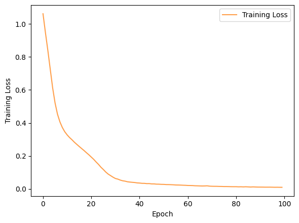
# predict class probabilities
dnn_y_pred_probs = dnn_model.predict(X_test_scaled)
# convert probabilities to class labels
dnn_y_pred = np.argmax(dnn_y_pred_probs, axis=1)
y_true = np.argmax(y_test, axis=1)
dnn_score = accuracy_score(y_true, dnn_y_pred)
print("Accuracy for Deep Neutron Network:", dnn_score)
print("\nClassification Report:\n", classification_report(y_true, dnn_y_pred))
3/3 ━━━━━━━━━━━━━━━━━━━━ 0s 20ms/step
Accuracy for Deep Neutron Network: 0.9850746268656716
Classification Report:
precision recall f1-score support
0 0.97 1.00 0.98 28
1 1.00 0.95 0.97 20
2 1.00 1.00 1.00 19
accuracy 0.99 67
macro avg 0.99 0.98 0.99 67
weighted avg 0.99 0.99 0.99 67
# compute and plot AUC-ROC plots
# AttributeError: 'Sequential' object has no attribute 'predict_proba'
# plot_AUC_ROC(dnn_model)
# compute and plot confusion matrix
dnn_cm = confusion_matrix(y_true, dnn_y_pred)
plot_confusion_matrix(dnn_cm, "Confusion Matrix using Deep Neural Network algorithm")

# compute and plot decision boundaries
# plot_decision_boundaries(dnn_model)
8. Model Evaluations
8.1 Comparison of Trained Models
To evaluate performance of different algorithms in classifying penguin species, we compare their accuracy scores and confusion matrices.
Algorithms we adopted in this episode include:
Instance-based: k-Nearest Neighbors.
Probability-based: Logistic Regression, and Naive Bayes.
Hyperplane-based: Support Vector Machine.
Tree-based methods: Decision Tree.
Network-based models: Multi-Layer Perceptron (MLP).
Each model was trained on same training set and evaluated on a common testing set, with consistent preprocessing applied across all methods.
scores = {'Multi-Layer Perceptron': mlp_score,
'Decision Tree': dt_score,
'Support Vector Machine': svc_score,
'Naive Bayes': gauss_nb_score,
'Logistic Regression': lr_score,
'k-Nearest Neighbors': knn_score}
# convert to lists for plotting
model_names = list(scores.keys())
accuracy_scores = list(scores.values())
plt.figure(figsize=(8, 5))
plt.barh(model_names, accuracy_scores, color='tab:green', alpha=0.75)
plt.xlabel('Accuracy scores')
plt.title('ML Model Accuracy Comparison')
plt.xlim(0.85, 1.02)
plt.xticks(np.arange(0.85, 1.03, 0.05))
# annotate bars
for i, score in enumerate(accuracy_scores):
plt.text(score + 0.006, i, f'{score:.2f}', va='center')
plt.tight_layout()
plt.show()

Performance under current training settings:
SVM achieved highest accuracy, demonstrating its effectiveness in capturing complex patterns and feature interactions in the Penguins dataset.
Naive Bayes showed slightly lower accuracy, likely due to its strong independence assumption between features, which does not fully hold in this dataset.
Other algorithms provided moderate performance.
# generate sample data for 6 heatmaps
fig, axs = plt.subplots(2, 3, figsize=(10, 6))
axs = axs.flatten()
heatmaps = []
vmin = min(map(np.min, [knn_cm, lr_cm, gauss_nb_cm, svc_cm, dt_cm, mlp_cm]))
vmax = max(map(np.max, [knn_cm, lr_cm, gauss_nb_cm, svc_cm, dt_cm, mlp_cm]))
subtitle = ["k-Nearest Neighbors", "Logistic Regression", "Gaussian Naive Bayes",
"Support Vector Machine", "Decision Tree", "Multi-Layer Perceptron"]
for i, data in enumerate([knn_cm, lr_cm, gauss_nb_cm, svc_cm, dt_cm, mlp_cm]):
hm = sns.heatmap(data, annot=True, ax=axs[i], cmap='YlGn', cbar=False, vmin=vmin, vmax=vmax,
xticklabels=["Adelie", "Chinstrap", "Gentoo"], yticklabels=['Adelie', 'Chinstrap', 'Gentoo'])
axs[i].set_title(subtitle[i])
heatmaps.append(hm)
# position for a univresal colorbar: [left, bottom, width, height] in figure coordinates
cbar_ax = fig.add_axes([0.92, 0.05, 0.03, 0.86])
plt.colorbar(heatmaps[0].collections[0], cax=cbar_ax)
plt.tight_layout(rect=[0, 0, 0.92, 1])
plt.show()
C:\Users\wangy\AppData\Local\Temp\ipykernel_41612\744061234.py:23: UserWarning: This figure includes Axes that are not compatible with tight_layout, so results might be incorrect.
plt.tight_layout(rect=[0, 0, 0.92, 1])
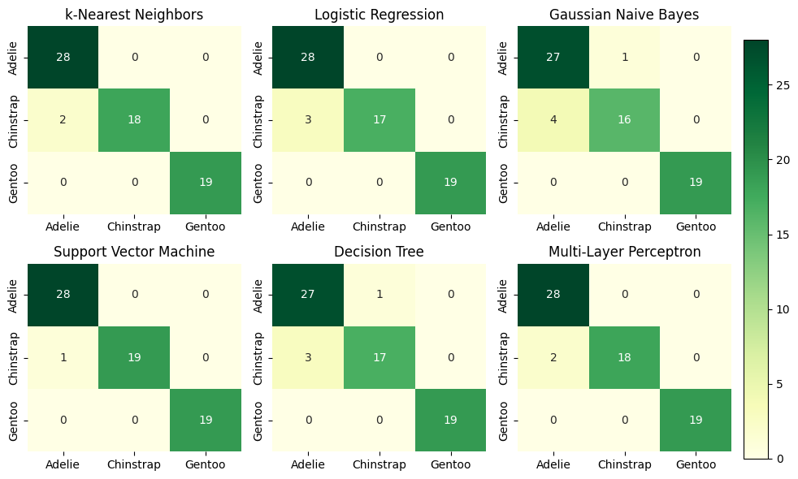
Confusion matrices provided deeper insight into class-level prediction performance:
SVM demonstrated well-balanced performance across all three penguin species.
Naive Bayes, in contrast, confused Adelie and Chinstrap penguins, likely due to overlapping feature distributions between these species.
Other algorithms had a limited number of misclassifications, primarily between Adelie and Chinstrap..
8.2 Guidelines for models selection
For classification tasks, we experimented with a variety of models, including k-Nearest Neighbors (k-NN), probability-based models (Logistic Regression, Naive Bayes), margin-based models (SVM), tree-based models (Decision Tree, Random Forest, Gradient Boosting), and neural networks (MLPs/NNs). Choosing most suitable model depends on multiple factors, including dataset size, feature characteristics, interpretability, and computational resources.
k-Nearest Neighbors (k-NN)
Works well on small datasets and when class boundaries are relatively simple.
Sensitive to high-dimensional data due to the curse of dimensionality.
Requires feature scaling for distance-based calculations.
Simple to implement but computationally expensive for large datasets.
Probability-based models (Logistic Regression, Naive Bayes)
Logistic Regression is interpretable and works well when classes are linearly separable.
Naive Bayes is efficient for text or categorical features but assumes feature independence, which may not hold in many datasets.
Both models are lightweight and fast to train.
Margin-based models (SVM)
Effective in high-dimensional feature spaces and when a clear decision boundary exists.
Can handle non-linear boundaries using kernel tricks.
Computationally intensive for large datasets and requires careful hyperparameter tuning.
Tree-based models (Decision Tree, Random Forest, Gradient Boosting)
Decision Trees are easy to interpret but prone to overfitting.
Random Forests reduce variance by averaging multiple trees, improving robustness.
Gradient Boosting models often achieve state-of-the-art accuracy on structured tabular data by sequentially learning residual errors, but they require careful hyperparameter tuning.
Tree-based models are scale-invariant and handle both numerical and categorical features naturally.
Neural Networks (MLPs/NNs)
Capable of learning complex, non-linear patterns.
Require larger datasets and feature scaling for effective training.
Less interpretable compared to tree-based models.
Computationally more intensive, often benefiting from GPU acceleration.
Practical Recommendation:
For small, simple datasets, k-NN, Logistic Regression, or SVM can provide quick baselines.
For structured tabular data, Random Forests or Gradient Boosting classifiers are generally preferred due to their robustness, strong accuracy, and some interpretability.
Neural Networks are more appropriate when the dataset is large or the relationships between features and classes are highly non-linear.
In general, tree-based ensembles like Random Forests and Gradient Boosting offer the best balance between accuracy, robustness, and usability for most practical classification tasks.